Tema 3.A.43
Crecimiento económico (I). Acumulación de capital y progreso técnico exógeno. El modelo de Solow. El modelo de Solow aumentado con acumulación de capital humano. El modelo de Ramsey-Cass-Koopmans.
Modelo de Solow con progreso técnico exógeno, regla de oro y convergencia; Solow aumentado con capital humano (MRW) y el modelo de Ramsey-Cass-Koopmans.
Exclusivo Material exclusivo de victorgutierrezmarcos.es y la app Oposición TCEE · DCE. Puedes usarlo libremente para tu estudio personal. No se autoriza su incorporación a otras plataformas, aplicaciones o servicios. Condiciones de uso.
Introducción
Enganche:
«Poco a poco se va lejos», dice el refrán. Pocas cosas lo ilustran mejor que el crecimiento económico, aunque con un matiz que es el centro de esta exposición: depende de cómo se avance.
En 1956, en plena Guerra Fría, Nikita Jruschov anunció a los embajadores occidentales que la Unión Soviética los enterraría. No era solo una bravata: en los años 50 la economía soviética crecía más deprisa que la estadounidense, y no pocos economistas occidentales daban por hecho que acabaría alcanzándola. No ocurrió: su crecimiento se fue frenando década tras década hasta casi detenerse en los 80.
¿Por qué? Porque había crecido sobre todo acumulando factores (más capital, más horas de trabajo, más población en la industria) y no aprendiendo a usarlos mejor. Con muy poca sustitución entre capital y trabajo, cada máquina nueva rendía menos que la anterior y la acumulación dejó de tirar de la economía (Krugman, 1994; Easterly y Fischer, 1995).
Detrás está la pregunta de esta exposición: ¿se puede crecer para siempre acumulando capital? Y, con ella, ¿por qué unos países son mucho más ricos que otros?
Relevancia:
El interés compuesto: las pequeñas diferencias de crecimiento, mantenidas en el tiempo, se convierten en enormes diferencias de renta. Con la regla del 70, una renta que crece al 1 % anual tarda unos 70 años en duplicarse; al 2 %, unos 35. En una vida, un punto más o menos de crecimiento separa a un país rico de uno estancado.
La economía de la frontera: el producto interior bruto (PIB) por habitante de Estados Unidos ha crecido a un ritmo notablemente estable, cerca del 2 % anual desde la posguerra y algo menos desde 1870 (gráfico 1) (Bolt y van Zanden, 2025; U.S. Bureau of Economic Analysis, 2026). C. I. Jones (2023) advierte de que parte de ese crecimiento se debe a factores transitorios, como el aumento de los años de educación y del número de investigadores, y de que la caída de la natalidad mundial puede frenarlo.
Por eso Lucas (1988, 5)1 escribió, a propósito de las diferencias de crecimiento entre países, que una vez que se empieza a pensar en ellas es difícil pensar en otra cosa.
Para la política económica: el crecimiento a largo plazo determina el nivel de vida, la sostenibilidad de la deuda pública y de las pensiones y el margen de la política fiscal; y los modelos de esta exposición son la base de la macroeconomía dinámica actual.
Gráfico 1.– PIB por habitante de Estados Unidos, 1870-2025 (escala logarítmica) 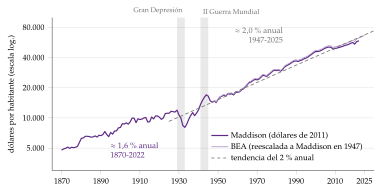
Contextualización. Desde un punto de vista conceptual:
El crecimiento económico es el aumento sostenido de la producción por habitante. La teoría del crecimiento es la rama de la macroeconomía que estudia la evolución a largo plazo de la producción, de la acumulación de factores y de la productividad.
Una senda de crecimiento equilibrado es aquella en la que todas las variables crecen a tasas constantes. En los modelos de esta exposición coincide con el estado estacionario: las variables medidas por unidad de trabajo eficiente permanecen constantes.
Hay convergencia si los países pobres crecen más deprisa que los ricos y se acercan a ellos: absoluta, si ocurre sin más; condicional, si solo ocurre entre países con los mismos determinantes (ahorro, población, tecnología).
Las causas próximas del crecimiento son la acumulación de capital físico, la de capital humano y el progreso técnico; las causas últimas, las instituciones, la geografía o la cultura que explican por qué unos países acumulan e innovan más que otros (anexo F). Los modelos de esta exposición estudian las causas próximas y toman el progreso técnico como exógeno: la tecnología mejora a un ritmo que el modelo no explica.
Toda teoría del crecimiento tiene que reproducir unos hechos estilizados, los que Kaldor (1961) observó en las economías industrializadas (caja siguiente).
Los hechos estilizados del crecimiento (Kaldor, 1961). En las economías industrializadas, a largo plazo:
la producción por trabajador crece a una tasa aproximadamente constante, sin tendencia a frenarse;
el capital por trabajador también crece a una tasa sostenida;
el rendimiento real del capital es aproximadamente constante;
la relación capital-producto, \(K/Y\), es aproximadamente constante;
las participaciones del trabajo y del capital en la renta son estables;
las tasas de crecimiento de la producción y de la productividad difieren mucho entre países.
En Estados Unidos se cumplen a grandes rasgos (gráfico 2): la relación capital-producto no muestra tendencia (3,8 en 1960 y 3,2 en 2023) y la rentabilidad real del capital ronda el 8 %; la participación del trabajo, en cambio, ha bajado del 64 % al 57 %, sobre todo desde 2000 (Groningen Growth and Development Centre, 2025; Comisión Europea, 2026). Su contraste con los datos y los «nuevos hechos» de C. I. Jones y Romer (2010), con las ideas, las instituciones, la población y el capital humano, se estudian en [ver tema 3.A.45].
Gráfico 2.– Los hechos de Kaldor en Estados Unidos, 1950-2025: relación capital-producto, participación del trabajo y rentabilidad real del capital 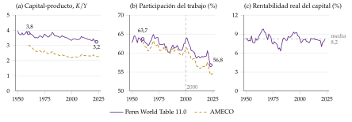
Desde un punto de vista histórico:
La pregunta es tan antigua como la economía. Los clásicos (Smith, Ricardo, Malthus) relacionaron el crecimiento con la división del trabajo, la acumulación de capital y los rendimientos decrecientes de la tierra2. A principios del siglo XX, Ramsey, Young, Knight y Schumpeter estudiaron el ahorro óptimo, los rendimientos crecientes y la innovación.
Harrod (1939) y Domar (1946) llevan el análisis keynesiano al largo plazo y concluyen que el crecimiento equilibrado es improbable e inestable.
Solow (1956) y Swan (1956)3 fundan la teoría neoclásica del crecimiento, que sentó las bases metodológicas de toda la macroeconomía moderna. Cass (1965) y Koopmans (1965) le añaden la optimización intertemporal de Ramsey (1928), y Mankiw, Romer y Weil (1992) la llevan a los datos con el capital humano.
Desde mediados de los 80, los modelos de crecimiento endógeno intentan explicar el progreso técnico que estos modelos toman como dado [ver tema 3.A.44].
Problemática (preguntas clave):
¿Puede la acumulación de capital sostener el crecimiento a largo plazo?
¿Por qué unos países son más ricos que otros? ¿Convergerán los pobres hacia los ricos?
¿Ahorra una economía de mercado lo que le conviene? ¿Puede la política económica acelerar el crecimiento?
Estructura: la exposición sigue el orden del título, que es también el de la historia de las ideas: primero, la acumulación de capital con progreso técnico exógeno; después, el capital humano, y, por último, el ahorro como decisión óptima. Cada modelo responde a una limitación del anterior.
I. El modelo de Solow (I): frente a la inestabilidad de Harrod y Domar, una función de producción neoclásica da un estado estacionario estable. Acumular capital no basta para crecer a largo plazo: solo lo consigue el progreso técnico, que el modelo toma como dado.
II. El modelo de Solow aumentado con capital humano (II): al añadir capital humano, las tasas de ahorro y de crecimiento de la población explican buena parte de las diferencias de renta entre países. Cerramos con otras extensiones (trampas de pobreza, recursos naturales) y con el puente al crecimiento endógeno.
III. El modelo de Ramsey, Cass y Koopmans (III): el ahorro deja de ser una constante y lo eligen hogares que optimizan. El equilibrio competitivo es eficiente, lo que permite el análisis normativo y el de la política fiscal.
3.A.43. Crecimiento económico (I)
Introducción
I. El modelo de Solow: acumulación de capital y progreso técnico exógeno
1. Idea: de Harrod-Domar (\(s/v=n\)) a Solow . Modelo: \(\dot k=s\,f(k)-(n+g+\delta)k\); \(f'(k_{\mathrm{oro}})=n+g+\delta\) . Evidencia y valoración
II. El modelo de Solow aumentado con capital humano y otras extensiones
1. Mankiw, Romer y Weil: \(\ln(Y/L)\) con \(s_K\) y \(s_H\) . Trampas de pobreza, recursos naturales, hacia el crecimiento endógeno
III. El modelo de Ramsey-Cass-Koopmans
1. Solución descentralizada: ecuación de Euler y diagrama de fases . Análisis normativo: \(f'(k^*)=\rho+\delta+\theta g\)
3. Extensiones (sector público), evidencia y valoración
Conclusión
Reparto del cante: introducción, 2′30″; I, 10′ (I.1, 1′30″; I.2, 7′; I.3, 1′30″); II, 5′30″ (II.1, 4′; II.2, 1′30″); III, 11′ (III.1, 6′; III.2, 2′30″; III.3, 2′30″), y conclusión, 1′. La introducción y la conclusión se cantan sin pizarra. La pizarra se organiza en 3 zonas. A la izquierda, las ecuaciones que se quedan hasta el final, recuadradas: la ecuación fundamental de Solow y la regla de oro (I.2), la renta de Mankiw, Romer y Weil (II.1) y, en el bloque III, la ecuación de Euler, la de acumulación y la regla de oro modificada. En el centro, los gráficos de Solow: el plano con la capa de la regla de oro (gráfico 4) y el de las tasas de crecimiento (gráfico 7), que sirve para la estática comparativa, la convergencia, el capital humano y la trampa de pobreza; se borran al empezar el bloque III. A la derecha, el diagrama de fases del bloque III, por capas. Los refranes se apuntan en una esquina al decirlos: el del enganche, «poco a poco se va lejos», y las pegatinas «la avaricia rompe el saco» (ineficiencia dinámica) y «al perro flaco todo son pulgas» (trampa de pobreza). Lo que va en cajas grises, en notas y en los anexos es para las preguntas del tribunal.
Para saber más
Can an Economy Grow Forever?, canal Economics Explained (vídeo): https://www.
youtube. (Economics Explained, 2020).com/ watch? v= 5iqjUt1I0VU Why Are Some Countries Rich and Others Poor?, Economics for People with Ha-Joon Chang, canal del Institute for New Economic Thinking (vídeo): https://www.
youtube. (Institute for New Economic Thinking, 2019).com/ watch? v= mi49GjJOPm0 «Introducción al crecimiento económico», primera lección de una serie de la Universidad de Valladolid (vídeo): https://www.
youtube. (Universidad de Valladolid, 2015).com/ watch? v= eoo1d0ef_ M8 «Why long-term economic growth often disappoints», The Economist, 7 de mayo de 2022: https://www.
economist. (The Economist, 2022).com/ finance- and- economics/ 2022/ 05/ 07/ why- long- term- economic- growth- often- disappoints «Economists understand little about the causes of growth», The Economist, 12 de abril de 2018: https://www.
economist. (The Economist, 2018).com/ finance- and- economics/ 2018/ 04/ 12/ economists- understand- little- about- the- causes- of- growth
I. El modelo de Solow: acumulación de capital y progreso técnico exógeno
En el cante (10′): la idea (1′30″), de palabra, con «\(s/v\) frente a \(n\)» en la esquina izquierda, que se completa al final con \(s/v^*=n+g+\delta\); el modelo (7′): los supuestos en 1′30″ (la caja de Uzawa y la de la controversia del capital, de palabra), la ecuación fundamental recuadrada y el gráfico 4 por capas (primero la recta \((n+\delta)k\), que se gira a \((n+g+\delta)k\) al introducir \(g\)), la regla de oro como capa del mismo gráfico y la pegatina «la avaricia rompe el saco», el gráfico 7 para la estática comparativa (solo la subida de \(s\)) y la convergencia, con \(\lambda\simeq4~\%\) dicho; la evidencia y la valoración (1′30″), de palabra. Un orden que funciona en la pizarra es el de la propia historia del modelo: con la tecnología constante (\(g=0\)) se llega al estado estacionario y a la regla de oro; en él la renta por trabajador deja de crecer, lo que lleva a la estática comparativa (más ahorro sube el nivel, pero tiene un límite y cuesta consumo; menos población, también con límite), y la única salida es que la tecnología crezca de forma exógena a la tasa \(g\). La tabla 2, la velocidad de convergencia paso a paso y las sendas temporales son de profundización.
Conclusión anticipada: con una función de producción neoclásica, la economía converge a un estado estacionario único y estable. La acumulación de capital, por sí sola, no sostiene el crecimiento por trabajador, porque sus rendimientos son decrecientes: el ahorro cambia el nivel de la renta, no su tasa de crecimiento a largo plazo, que es la del progreso técnico, exógeno.
Nexo: empezamos por el problema que el modelo vino a resolver, la inestabilidad del crecimiento en el modelo de Harrod y Domar.
I.1. Idea: de Harrod y Domar a Solow
a) Idea
El antecedente: tras la Teoría general, Harrod (1939) y Domar (1946) llevan el análisis keynesiano al largo plazo por separado y llegan a la misma conclusión: el crecimiento equilibrado con pleno empleo es posible, pero improbable e inestable. Con una función de producción de coeficientes fijos, la relación capital-producto \(v\equiv K/Y\) es una constante tecnológica; con un ahorro proporcional a la renta, \(S_t=s\,Y_t\), y una inversión según el acelerador, \(I_t=v\,\Delta Y_t\) [ver tema 3.A.34], salen 2 tasas de crecimiento (anexo A):
la tasa garantizada, \(s/v\), la que mantiene el ahorro igual a la inversión que desean los empresarios. Es inestable: si la economía crece algo más, la inversión del acelerador supera al ahorro, la demanda tira de la producción y el crecimiento se aleja aún más; si crece algo menos, ocurre lo contrario (el principio de inestabilidad de Harrod);
la tasa natural, \(n\) (más el progreso técnico, si lo hay), la que mantiene el pleno empleo de una población activa que crece.
El problema: crecer con pleno empleo exige \(s/v=n\), y como \(s\), \(v\) y \(n\) son parámetros independientes, sería una casualidad. El crecimiento equilibrado transcurre en el filo de la navaja (knife-edge), en la expresión de Solow (1956, 65), y la economía tiende al paro creciente o a la inflación. La implicación era keynesiana: hace falta una política fiscal que acerque la economía a la senda de pleno empleo.
La respuesta de Solow: el problema está en que ninguno de los 3 parámetros se ajusta. Solow (1956) y Swan (1956) aceptan todos los supuestos de Harrod y Domar salvo las proporciones fijas4: con una función de producción neoclásica, capital y trabajo se sustituyen, la relación capital-producto se ajusta y la igualdad de Harrod se cumple sola en el estado estacionario: \[s\,\frac{f(k^*)}{k^*}=n+g+\delta\qquad\Longleftrightarrow\qquad \frac{s}{v^*}=n+g+\delta,\] donde la tasa natural incluye ahora el progreso técnico, \(g\), y la depreciación, \(\delta\).
Por qué contamos este modelo: es el caballo de batalla de la teoría del crecimiento. Con un solo bien, sin optimización de los hogares y con 4 parámetros exógenos (\(s\), \(n\), \(g\) y \(\delta\)), da un marco para estudiar las fuentes del crecimiento, hacer estática comparativa y llevar la teoría a los datos [ver tema 3.A.45]. Responde a una pregunta: ¿puede la acumulación de capital explicar el crecimiento sostenido y las diferencias de renta entre países?
I.2. El modelo: estado estacionario, regla de oro y convergencia
b) Modelo
i) Supuestos
Economía: cerrada, sin sector público y con un único bien, que se consume o se invierte: \(Y_t=C_t+I_t\)5. El tiempo es continuo y el horizonte, infinito.
Tecnología: una función de producción neoclásica con progreso técnico aumentador del trabajo, \[Y_t=F(K_t,A_tL_t),\tag{1}\] donde \(A_t\) es el nivel tecnológico y \(A_tL_t\) el trabajo eficiente6. La tecnología es un bien no rival (una receta la pueden usar a la vez todas las empresas) y, en el modelo, no excluible: un bien público [ver tema 3.A.23]. \(F\) cumple 3 propiedades (gráfico 3):
productos marginales positivos y decrecientes: \(F_K>0\), \(F_{KK}<0\), \(F_L>0\), \(F_{LL}<0\);
rendimientos constantes a escala en \(K\) y \(L\): \(F(\kappa K,A\,\kappa L)=\kappa F(K,AL)\) para todo \(\kappa>0\). Se escalan los factores rivales, no la tecnología: duplicar fábricas y trabajadores con la misma receta duplica la producción (principio de réplica) [ver tema 3.A.11];
las condiciones de Inada (Inada, 1963) (tabla 1): las primeras unidades de cada factor son muy productivas y, cuando abundan, su producto marginal tiende a cero7.
Tecnología y población exógenas: crecen a tasas constantes, \(\gamma_A=g\) y \(\gamma_L=n\), es decir, \(A_t=A_0e^{gt}\) y \(L_t=L_0e^{nt}\). La población es la población activa y trabaja entera.
Hogares: la economía admite un agente representativo8, propietario de los factores, con \(K_0\) dado. Ahorra una fracción constante de la renta, \(s\in(0,1)\): \(S_t=s\,Y_t\) y \(C_t=(1-s)\,Y_t\). No optimiza: la tasa de ahorro es un dato9. Como el consumo, la inversión es una fracción constante de la renta, \(I_t=s\,Y_t\): en una economía cerrada y sin sector público, la tasa de ahorro es también la tasa de inversión.
Empresas y mercados: competencia perfecta en los mercados del bien y de los factores, con precios flexibles. Cada factor cobra su producto marginal, \(r_t+\delta=F_K\) y \(w_t=F_L\), con \(r_t\) el tipo de interés real y \(w_t\) el salario real; por el teorema de Euler, los pagos agotan el producto, \(Y_t=(r_t+\delta)K_t+w_tL_t\), y el beneficio es nulo. Con pleno empleo, todo el ahorro se invierte10.
Capital: se acumula con la inversión y se deprecia a la tasa constante \(\delta>0\): \(\dot K_t=I_t-\delta K_t\).
| Capital | Trabajo | |
|---|---|---|
| Factor esencial | \(F(0,AL)=0\) | \(F(K,0)=0\) |
| Muy productivo si escasea | \(\lim_{K\to0}F_K=\infty\) | \(\lim_{L\to0}F_L=\infty\) |
| Improductivo si abunda | \(\lim_{K\to\infty}F_K=0\) | \(\lim_{L\to\infty}F_L=0\) |
Fuente: elaboración propia a partir de Inada (1963) y Acemoglu (2009, cap. 2).
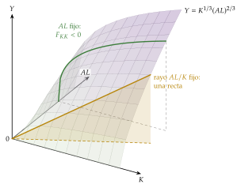
Fuente: elaboración propia a partir de Acemoglu (2009, cap. 2).
¿Por qué progreso técnico aumentador del trabajo? El teorema de Uzawa
El resultado: Uzawa (1961a) demostró que, con rendimientos constantes a escala, si existe una senda de crecimiento equilibrado (\(Y\), \(K\) y \(C\) crecen a tasas constantes), la función de producción admite en ella la representación \(F(K_t,A_tL_t)\), con un progreso técnico neutral en el sentido de Harrod (aumentador del trabajo). Es una condición necesaria; C. I. Jones y Scrimgeour (2008) dan una demostración sencilla y el anexo B la desarrolla.
La intuición: si \(\dot K=sY-\delta K\) crece a tasa constante, \(K\) e \(Y\) crecen al mismo ritmo y \(K/Y\) es constante. Con rendimientos constantes, \(Y/K=F(1,AL/K)\) solo es constante si el trabajo, medido en unidades de eficiencia, crece al mismo ritmo que el capital. Si la tecnología aumentara el capital, la relación capital-producto efectiva cambiaría sin cesar.
El matiz: el teorema no exige que la tecnología sea literalmente \(F(K,AL)\), sino que pueda escribirse así en la senda equilibrada. Con una Cobb-Douglas, \(Y=(A_KK)^{\alpha}(A_LL)^{1-\alpha}\), basta definir \(A\equiv A_K^{\alpha/(1-\alpha)}A_L\): las 3 neutralidades (de Hicks, \(A\,F(K,L)\); de Solow, \(F(AK,L)\), y de Harrod, \(F(K,AL)\)) coinciden, y el tipo de progreso técnico solo importa si la elasticidad de sustitución es distinta de 1 [ver tema 3.A.11].
El supuesto discutido: la función de producción agregada y la controversia del capital
El modelo suma todo el capital en una sola magnitud \(K\), medida en unidades del único bien. Joan Robinson (1953) preguntó desde Cambridge (Inglaterra) en qué unidades se mide el capital cuando hay máquinas distintas: si se suma en valor, a precios, ese valor depende del tipo de interés, que es justo lo que la teoría quiere explicar.
Sraffa (1960) mostró que una misma técnica puede ser la más rentable con tipos de interés bajos y altos, y otra con tipos intermedios (reversión de técnicas, reswitching): la relación entre el capital por trabajador y el tipo de interés no tiene por qué ser monótona.
Desde Cambridge (Massachusetts), Samuelson (1966) reconoció el resultado: la parábola neoclásica de una función de producción agregada con capital homogéneo no vale en general.
La teoría del crecimiento siguió usando el modelo de un bien como una aproximación útil. La controversia se estudia en [ver tema 3.A.4].
ii) Desarrollo
Notación del tema
Las mayúsculas son agregados (\(Y_t\), \(K_t\), \(L_t\), \(C_t\)); las minúsculas, valores por unidad de trabajo eficiente: \(k_t\equiv K_t/(A_tL_t)\), \(y_t\equiv Y_t/(A_tL_t)\) y \(c_t\equiv C_t/(A_tL_t)\).
Lo que es por trabajador (o por habitante: aquí la población es la fuerza de trabajo) se escribe sin abreviar: \(Y_t/L_t=A_t\,y_t\), \(K_t/L_t=A_t\,k_t\), \(C_t/L_t=A_t\,c_t\). Si \(g=0\) y \(A_t=1\), \(k_t\) es el capital por trabajador.
Con rendimientos constantes, \(y_t=F(k_t,1)\equiv f(k_t)\) es la forma intensiva de la función de producción, con \(f'>0\), \(f''<0\), \(f(0)=0\), \(f'(0)=\infty\) y \(f'(\infty)=0\). Con una Cobb-Douglas, \(f(k)=k^{\alpha}\).
Un punto encima es la derivada respecto al tiempo, \(\dot k_t\equiv dk_t/dt\), y \(\gamma_X\equiv\dot X/X\) es la tasa de crecimiento de \(X\).
La ecuación fundamental
Partimos de la acumulación del capital agregado, \(\dot K_t=s\,Y_t-\delta K_t\). Como \(k_t=K_t/(A_tL_t)\), su tasa de crecimiento es la del capital menos las del trabajo y la tecnología: \[\gamma_k=\gamma_K-n-g=s\,\frac{Y_t}{K_t}-(n+g+\delta).\]
Multiplicando por \(k_t\) y usando \(Y_t/(A_tL_t)=f(k_t)\) se obtiene la ecuación fundamental del modelo de Solow, o ley fundamental de movimiento:
\[\dot k_t=s\,f(k_t)-(n+g+\delta)\,k_t\tag{2}\]
Se lee como una carrera entre 2 términos:
\(s\,f(k_t)\), la inversión efectiva por unidad de trabajo eficiente;
\((n+g+\delta)\,k_t\), la inversión de reposición (break-even investment): lo que hay que invertir para que \(k\) no baje, porque el capital se deprecia (\(\delta\)) y hay que dotar de capital a los nuevos trabajadores (\(n\)) y a las nuevas unidades de eficiencia (\(g\)).
Conocida la senda de \(k_t\), se conocen las de todas las demás variables11: \(y_t=f(k_t)\), \(c_t=(1-s)f(k_t)\), \(r_t=f'(k_t)-\delta\) y \(w_t=A_t\left[f(k_t)-k_tf'(k_t)\right]\).
Empecemos con la tecnología constante (\(g=0\) y \(A_t=1\)): entonces \(k\) es el capital por trabajador y la recta de reposición es \((n+\delta)k\). Al introducir el progreso técnico, la recta gira hacia arriba hasta \((n+g+\delta)k\), y \(k\) pasa a medirse por unidad de trabajo eficiente. El análisis es el mismo.
El estado estacionario
Existencia y unicidad: el estado estacionario es el \(k^*>0\) en el que \(\dot k=0\), es decir, \(s\,f(k^*)=(n+g+\delta)\,k^*\). Las condiciones de Inada garantizan que existe y es único: \(s\,f(k)\) empieza más empinada que la recta de reposición y acaba más plana (gráfico 4). Con una Cobb-Douglas, \[k^*=\left(\frac{s}{n+g+\delta}\right)^{\frac{1}{1-\alpha}},\qquad y^*=\left(\frac{s}{n+g+\delta}\right)^{\frac{\alpha}{1-\alpha}}.\]
Estabilidad: si \(k<k^*\), la inversión efectiva supera a la de reposición y \(k\) sube; si \(k>k^*\), baja. Desde cualquier \(k_0>0\) la economía converge a \(k^*\). El origen, \(k=0\), es otro estado estacionario, inestable y sin interés económico. Al contrario que en Harrod y Domar, la senda equilibrada es estable: no hay filo de la navaja.
Senda de crecimiento equilibrado: en el estado estacionario, \(k\), \(y\) y \(c\) no cambian, \(\gamma_k=\gamma_y=\gamma_c=0\), y entonces
las variables por trabajador crecen al ritmo del progreso técnico: \(\gamma_{Y/L}=\gamma_{K/L}=\gamma_{C/L}=g\);
las agregadas crecen a \(n+g\): \(\gamma_Y=\gamma_K=\gamma_C=n+g\);
el tipo de interés, \(r^*=f'(k^*)-\delta\), es constante, y el salario real, \(w_t=A_t\left[f(k^*)-k^*f'(k^*)\right]\), crece a \(g\).
Así se reproducen los 5 primeros hechos de Kaldor: crecen \(Y/L\) y \(K/L\), y son constantes el tipo de interés, la relación capital-producto, \(K/Y=k^*/f(k^*)\), y las participaciones de los factores.
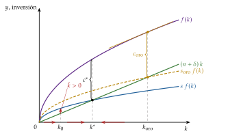
Fuente: elaboración propia a partir de Solow (1956) y D. Romer (2019, cap. 1).
La regla de oro de la acumulación
La pregunta: si la sociedad pudiera elegir la tasa de ahorro, ¿cuál escogería? Phelps (1961) propone la que maximiza el consumo por unidad de trabajo eficiente en el estado estacionario y la llama regla de oro de la acumulación, en referencia a la regla evangélica: cada generación ahorra para las siguientes lo que habría querido que ahorraran para ella las anteriores12.
La condición: en el estado estacionario, \(c^*=f(k^*)-(n+g+\delta)\,k^*\). Maximizando respecto a \(k^*\):
\[f'(k_{\mathrm{oro}})=n+g+\delta\tag{3}\]
El producto marginal del capital iguala la inversión de reposición. Gráficamente, la pendiente de \(f\) es la de la recta \((n+g+\delta)k\), y el consumo, la distancia vertical entre ambas, es máximo (gráfico 4). En términos del tipo de interés, \(r_{\mathrm{oro}}=f'(k_{\mathrm{oro}})-\delta=n+g\): el tipo de interés iguala el crecimiento de la economía.
Con una Cobb-Douglas: \(f'(k)=\alpha k^{\alpha-1}\) y, en el estado estacionario, \(k^{1-\alpha}=s/(n+g+\delta)\). Sustituyendo en la regla de oro, \(\alpha(n+g+\delta)/s_{\mathrm{oro}}=n+g+\delta\), es decir, \[s_{\mathrm{oro}}=\alpha:\] la tasa de ahorro de la regla de oro es la participación del capital en la renta. El consumo de estado estacionario dibuja una U invertida frente a \(s\), con el máximo en \(s_{\mathrm{oro}}\) (gráfico 5).
Ineficiencia dinámica (si \(s>s_{\mathrm{oro}}\), es decir, \(k^*>k_{\mathrm{oro}}\)): bajar la tasa de ahorro hasta \(s_{\mathrm{oro}}\) sube el consumo de inmediato y en todos los momentos siguientes, hasta el nuevo estado estacionario (gráfico 6). Es una mejora de Pareto entre generaciones: el estado estacionario inicial es dinámicamente ineficiente. «La avaricia rompe el saco»: la economía ahorra tanto que el capital ya no rinde lo que cuesta mantenerlo.
Eficiencia dinámica (si \(s<s_{\mathrm{oro}}\)): subir el ahorro hasta \(s_{\mathrm{oro}}\) eleva el consumo del nuevo estado estacionario, pero lo reduce durante la transición. Hay un conflicto entre las generaciones presentes y las futuras, y el modelo, sin preferencias, no puede decir si conviene: hace falta el análisis normativo del apartado III.2.
Su alcance: la regla de oro es una referencia útil para hablar de eficiencia dinámica, pero no es un óptimo. No se deduce de unas preferencias (Acemoglu, 2009, cap. 2), y nada en el modelo lleva a la economía hacia ella: alguien tendría que elegir \(s_{\mathrm{oro}}\).
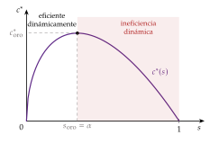
Fuente: elaboración propia a partir de Phelps (1961) y Campante, Sturzenegger y Velasco (2021, cap. 3).
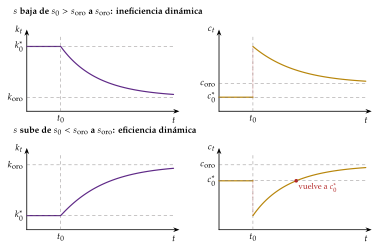
Fuente: elaboración propia a partir de Campante, Sturzenegger y Velasco (2021, cap. 3).
La representación en tasas de crecimiento
Dividiendo (2) entre \(k_t\): \[\gamma_k=s\,\frac{f(k_t)}{k_t}-(n+g+\delta).\tag{4}\]
\(s\,f(k)/k\) es la productividad media del capital multiplicada por \(s\). Por los rendimientos decrecientes, es decreciente en \(k\) (de infinito a cero, por las condiciones de Inada). La distancia vertical hasta la horizontal \(n+g+\delta\) es la tasa de crecimiento de \(k\) (gráfico 7).
Cuanto más lejos está la economía de su estado estacionario, más deprisa crece: el capital por unidad de trabajo eficiente crece rápido al principio y cada vez más despacio. Es el gráfico que sirve para la estática comparativa y para la convergencia.
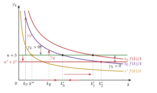
Fuente: elaboración propia a partir de Barro y Sala-i-Martin (2004, cap. 1).
Estática comparativa: ¿cómo se puede crecer más?
Más ahorro (\(s\uparrow\)): la curva \(s\,f(k)\) sube (en tasas, \(s\,f(k)/k\) se desplaza hacia arriba) y \(k^*\) e \(y^*\) aumentan (gráficos 7 y 8).
En el momento del cambio, \(k\) no varía, pero el consumo cae, porque se ahorra más de la misma renta.
Durante la transición, \(k\) e \(y\) crecen, y la renta por trabajador crece por encima de \(g\) unos años.
A largo plazo, la renta por trabajador vuelve a crecer a \(g\), en una senda más alta y paralela: el ahorro tiene un efecto nivel, no un efecto crecimiento.
El consumo del nuevo estado estacionario es mayor si la economía estaba por debajo de la regla de oro y menor si estaba por encima.
Y tiene un límite: \(s\) no puede pasar de 1, y cada subida exige sacrificar consumo.
Menos población (\(n\downarrow\)) o menos depreciación (\(\delta\downarrow\)): la recta de reposición se hace más plana y \(k^*\) e \(y^*\) suben; otra vez, un efecto nivel con un límite.
Un salto de la tecnología (\(A_0\uparrow\)): no cambia \(k^*\) ni \(y^*\), que están en unidades eficientes, pero eleva en la misma proporción la renta por trabajador, \(A\,y^*\).
Progreso técnico más rápido (\(g\uparrow\)): \(k^*\) e \(y^*\) bajan, porque hay que dotar de capital a más unidades de eficiencia, pero la renta por trabajador crece más deprisa. Es la única forma de subir el crecimiento por trabajador a largo plazo, y el modelo no la explica.
La tabla 2 resume los efectos.
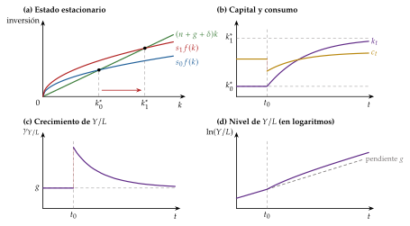
Fuente: elaboración propia a partir de D. Romer (2019, cap. 1, figs. 1.5 y 1.6).
| Sube | \(k^*\) | \(y^*\) | \(c^*\) | \(f'(k^*)\) | Nivel de \(Y/L\) | \(\gamma_{Y/L}\) a largo plazo | \(\gamma_Y\) a largo plazo |
|---|---|---|---|---|---|---|---|
| \(s\) | \(+\) | \(+\) | \(\pm\)a | \(-\) | \(+\) | \(=\) | \(=\) |
| \(n\) | \(-\) | \(-\) | \(-\) | \(+\) | \(-\) | \(=\) | \(+\) |
| \(\delta\) | \(-\) | \(-\) | \(-\) | \(+\) | \(-\) | \(=\) | \(=\) |
| \(A_0\) (nivel) | \(=\) | \(=\) | \(=\) | \(=\) | \(+\) | \(=\) | \(=\) |
| \(g\) | \(-\) | \(-\) | \(-\) | \(+\) | \(\pm\)b | \(+\) | \(+\) |
a \(+\) si la economía estaba por debajo de la regla de oro y \(-\) si estaba por encima. b La senda de largo plazo de \(\ln(Y/L)\) arranca más abajo, porque \(y^*\) es menor, pero es más empinada y acaba por encima. En verde, el único parámetro que cambia el crecimiento por trabajador a largo plazo. Fuente: elaboración propia a partir de D. Romer (2019, cap. 1).
La dinámica de transición: ¿a qué velocidad se converge?
Fuera del estado estacionario, la tasa de crecimiento de \(k\) cambia continuamente. Para saber cuánto tarda la economía en acercarse a \(k^*\), se aproxima (2) linealmente alrededor del estado estacionario (anexo C): \[\frac{d\ln k_t}{dt}\simeq-\lambda\left(\ln k_t-\ln k^*\right),\qquad \lambda=(1-\alpha)(n+g+\delta),\tag{5}\] donde \(\alpha\equiv k^*f'(k^*)/f(k^*)\) es la elasticidad de la producción respecto al capital (con una Cobb-Douglas, la participación del capital).
\(\lambda\) es la velocidad de convergencia: cada año se cierra la fracción \(\lambda\) de la distancia (en logaritmos) que queda hasta el estado estacionario. Como \(\ln y=\alpha\ln k\), la renta converge a la misma velocidad: \(\ln y_t-\ln y^*=e^{-\lambda t}(\ln y_0-\ln y^*)\). La semivida, el tiempo que tarda en cerrarse la mitad de la distancia, es \(\ln2/\lambda\simeq0{,}69/\lambda\).
Con valores habituales, \(\alpha=1/3\) y \(n+g+\delta=0{,}06\), \(\lambda=4~\%\) anual y la semivida es de unos 17 años.
La velocidad es mayor cuanto más deprisa hay que reponer capital (\(n+g+\delta\)) y cuanto menor es \(\alpha\): con \(\alpha\) pequeño, los rendimientos del capital decrecen deprisa y la economía llega pronto a su estado estacionario.
iii) Implicaciones
Crecimiento exógeno: a largo plazo, la renta por trabajador crece a \(g\), una tasa que el modelo no explica. Los rendimientos decrecientes del capital frenan el crecimiento por acumulación, y el progreso técnico es «maná caído del cielo».
La política económica puede cambiar el nivel de la renta y del consumo (con el ahorro, la población o la depreciación) y la velocidad de la transición, pero no la tasa de crecimiento a largo plazo.
El modelo admite una lectura pesimista, porque no explica el crecimiento, y otra optimista: es el trampolín de modelos más ricos, que lo explicarán relajando sus supuestos (apartado II y [ver tema 3.A.44]).
Convergencia condicional: cada economía converge a su propio estado estacionario, y crece más deprisa cuanto más lejos está de él.
Si 2 países comparten \(s\), \(n\), \(\delta\), \(g\) y la función de producción, el más pobre crece más deprisa y alcanza al rico: convergencia absoluta dentro de ese grupo.
Si difieren en sus parámetros, cada uno converge a su estado estacionario y las diferencias de renta persisten: convergencia condicional (gráfico 7).
Convergencia en tasas: todos los países que comparten la tecnología, y con ella \(g\), acaban creciendo al mismo ritmo por trabajador, aunque sus niveles difieran.
Flujos de capital: si las diferencias de renta se debieran solo al capital, su rentabilidad sería mucho mayor en los países pobres y el capital fluiría hacia ellos; que no lo haga es la paradoja de Lucas (1990).
I.3. Evidencia empírica y valoración
Las extensiones del modelo, entre ellas la del capital humano que pide el título, ocupan el apartado II; aquí, cómo se ve el modelo en los datos y qué le falta.
c) Evidencia empírica
Los hechos de Kaldor: el modelo reproduce en su senda equilibrada los 5 primeros, y los datos de la economía de la frontera los confirman a grandes rasgos (gráfico 2), salvo la caída reciente de la participación del trabajo. No reproduce el sexto, las diferencias persistentes de crecimiento entre países: con convergencia condicional solo son transitorias. España es el contraste: su relación capital-producto ha seguido subiendo desde 1960, señal de una economía que converge y no está en su estado estacionario (Groningen Growth and Development Centre, 2025; Comisión Europea, 2026).
Contabilidad del crecimiento: con datos de Estados Unidos entre 1909 y 1949, Solow (1957, 316 y 320) estima que, mientras la producción por hora de trabajo se multiplicaba por 2, el mayor equipamiento de capital por hora explicaba apenas 1/8 del avance (12,5 %). Los 7/8 restantes (87,5 %) quedaban fuera de la acumulación de factores, y Solow los atribuye al cambio técnico, entendido de forma amplia. Esa parte sin explicar es el residuo de Solow, o productividad total de los factores (PTF), \(g\equiv\gamma_A\). Con mejores medidas de la calidad del capital y del trabajo el residuo baja, pero sigue siendo grande [ver tema 3.A.45].
Convergencia: entre 1960 y 2023, los países pobres no han crecido más deprisa que los ricos, salvo dentro de la OCDE, donde la convergencia es clara (gráfico 9). Desde 2000 aparece algo de convergencia absoluta también en la muestra amplia (Kremer, Willis y You, 2022), aunque lenta y sensible a la base de datos (Groningen Growth and Development Centre, 2025; Bolt y van Zanden, 2025). Condicionando a la inversión, la población y la escolarización, la convergencia aparece, pero a un ritmo de entre el 1,4 y el 2 % anual (Mankiw, Romer y Weil, 1992, tabla V), la mitad del 4 % que predice el modelo.
Diferencias de renta: con datos de 1960 a 1985, las tasas de inversión y de crecimiento de la población explican cerca del 60 % de las diferencias de renta por persona en edad de trabajar entre países, como predice el modelo, pero solo con una participación implícita del capital de 0,6, el doble de la observada (Mankiw, Romer y Weil, 1992, tabla I).
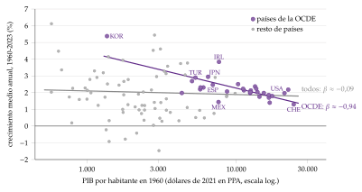
Fuente: elaboración propia a partir de Groningen Growth and Development Centre (2025) (Penn World Table 11.0; PIB por habitante en paridad de poder adquisitivo, dólares de 2021).
d) Valoración
Aportaciones: es sencillo y estable, corrige el filo de la navaja de Harrod y Domar, reproduce los hechos de Kaldor y da el marco de la contabilidad del crecimiento y del estudio de la convergencia.
Limitaciones, que abren lo que sigue:
Cuantitativa: con una participación del capital realista, en torno a 1/3, las diferencias de ahorro y de población explican poco de las enormes diferencias de renta entre países, y la convergencia que predice es demasiado rápida. ¿Falta un factor acumulable? Ampliar la noción de capital con el capital humano es la respuesta de Mankiw, Romer y Weil (apartado II).
Normativa: el ahorro no sale de ninguna decisión, sino de una regla. El modelo tiene un equilibrio de mercado, con empresas competitivas que pagan a cada factor su producto marginal, pero, sin preferencias, no permite decir si ese equilibrio es bueno o malo: solo detecta un caso de despilfarro, la ineficiencia dinámica. Es lo que resuelven Cass (1965) y Koopmans (1965) recuperando a Ramsey (apartado III).
Teórica: deja sin explicar lo principal, el progreso técnico, que los modelos de crecimiento endógeno hacen depender de decisiones económicas [ver tema 3.A.44].
Recapitulación y nexo: el modelo de Solow enseña que la acumulación de capital, por sí sola, solo cambia niveles. Una vez visto que acierta en lo cualitativo y falla en lo cuantitativo, pasamos a ampliarlo con el capital humano.
II. El modelo de Solow aumentado con capital humano y otras extensiones
En el cante (5′30″): el modelo de Mankiw, Romer y Weil (4′), con la función de producción, las 2 ecuaciones de acumulación de palabra («como la de Solow, una para cada capital»), la ecuación de la renta recuadrada junto a la de Solow (se queda en la esquina izquierda) y las 2 cifras que hay que decir: 0,6 frente a 1/3 y el 78 % de la varianza; la velocidad del 2 %, dicha. El diagrama de fases del gráfico 10 es de profundización. Las otras extensiones (1′30″): la trampa de pobreza como capa del gráfico de tasas (la curva en forma de N, en otro color), con la pegatina «al perro flaco todo son pulgas»; los recursos naturales, el dinero y los 2 sectores, en una frase cada uno si sobra tiempo, y el puente al crecimiento endógeno, que lanza el bloque siguiente y el tema del crecimiento endógeno.
Conclusión anticipada: si el capital incluye el capital humano, el modelo de Solow explica buena parte de las diferencias de renta entre países con participaciones de los factores realistas y predice una convergencia lenta, como la observada. Pero el crecimiento a largo plazo sigue siendo el del progreso técnico, exógeno. Otras extensiones (trampas de pobreza, recursos naturales) matizan el modelo sin cambiar esta conclusión; solo levantar los rendimientos decrecientes la cambia.
Nexo: una vez visto que el modelo de Solow acierta en lo cualitativo pero falla en lo cuantitativo, pasamos a ampliarlo con un segundo factor acumulable.
II.1. El modelo de Mankiw, Romer y Weil (1992)
a) Idea
El problema: con una participación del capital de 1/3, el modelo de Solow predice que la renta por trabajador apenas responde a la tasa de ahorro (con una elasticidad de \(\alpha/(1-\alpha)=0{,}5\)) y que la convergencia es rápida (4 % anual). En los datos, la renta responde mucho más y la convergencia es más lenta.
La propuesta: Mankiw, Romer y Weil (1992) (MRW) dan la explicación más sencilla: falta un factor que se acumula, el capital humano, \(H\), el conjunto de conocimientos y habilidades de los trabajadores que aumenta su productividad [ver tema 3.A.25]. Se acumula como las máquinas: renunciando a consumo.
La intuición: si el capital en sentido amplio, físico y humano, tiene una participación cercana a 2/3, los rendimientos decrecen más despacio, el ahorro pesa más en la renta y la convergencia es más lenta. El modelo de Solow, bien medido, sí explicaría buena parte de las diferencias de renta.
b) Modelo
i) Supuestos
Los del modelo de Solow (apartado I.2), con una función de producción Cobb-Douglas con 3 factores: \[Y_t=K_t^{\alpha}\,H_t^{\beta}\,(A_tL_t)^{1-\alpha-\beta},\qquad \alpha+\beta<1,\tag{6}\] con rendimientos constantes en los 3 factores y decrecientes en el capital en sentido amplio (\(\alpha+\beta<1\)): con \(\alpha+\beta=1\) sería un modelo de crecimiento endógeno [ver tema 3.A.44].
Se invierte una fracción constante \(s_K\) de la renta en capital físico y otra \(s_H\) en capital humano: el gasto en educación, incluido el coste de oportunidad de estudiar en lugar de trabajar.
Hay un solo bien: una unidad de producción se puede consumir o convertir en una unidad de capital físico o de capital humano. Los 2 capitales se deprecian a la misma tasa \(\delta\); \(n\) y \(g\) son exógenos.
ii) Desarrollo
Acumulación: por unidad de trabajo eficiente, \(k\equiv K/(AL)\), \(h\equiv H/(AL)\)13 e \(y\equiv Y/(AL)=k^{\alpha}h^{\beta}\). Como en Solow, cada capital crece con su inversión y se diluye con \(n+g+\delta\): \[\dot k_t=s_K\,k_t^{\alpha}h_t^{\beta}-(n+g+\delta)\,k_t,\qquad \dot h_t=s_H\,k_t^{\alpha}h_t^{\beta}-(n+g+\delta)\,h_t.\tag{7}\]
Estado estacionario: con \(\dot k=\dot h=0\), \(s_K\,y^*=(n+g+\delta)\,k^*\) y \(s_H\,y^*=(n+g+\delta)\,h^*\), de modo que \(h^*/k^*=s_H/s_K\). Sustituyendo, \[k^*=\left(\frac{s_K^{1-\beta}s_H^{\beta}}{n+g+\delta}\right)^{\frac{1}{1-\alpha-\beta}},\qquad h^*=\left(\frac{s_K^{\alpha}s_H^{1-\alpha}}{n+g+\delta}\right)^{\frac{1}{1-\alpha-\beta}}.\] Es único y estable: en el plano \((k,h)\), el lugar \(\dot k=0\) es convexo y el \(\dot h=0\), cóncavo, y se cortan una sola vez (gráfico 10).
La renta por trabajador: como \(Y_t/L_t=A_t\,y^*\) y \(A_t=A_0e^{gt}\), tomando logaritmos se obtiene la ecuación de MRW:
\[\ln\frac{Y_t}{L_t}=\ln A_0+g\,t+\frac{\alpha}{1-\alpha-\beta}\ln s_K+\frac{\beta}{1-\alpha-\beta}\ln s_H-\frac{\alpha+\beta}{1-\alpha-\beta}\ln(n+g+\delta)\tag{8}\]
La renta por trabajador sube con las 2 tasas de inversión y baja con el crecimiento de la población.
La misma ecuación con el stock de capital humano: si en lugar de \(s_H\) se usa el \(h^*\) del estado estacionario, \[\ln\frac{Y_t}{L_t}=\ln A_0+g\,t+\frac{\alpha}{1-\alpha}\ln s_K-\frac{\alpha}{1-\alpha}\ln(n+g+\delta)+\frac{\beta}{1-\alpha}\ln h^*,\] que es la de Solow con un término más. Si se omite el capital humano, que está correlacionado con \(s_K\) y con \(n\), los coeficientes del ahorro y de la población salen sesgados al alza: por eso la regresión de Solow pedía un \(\alpha\) de 0,6.
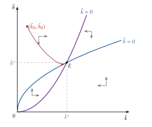
Fuente: elaboración propia a partir de Mankiw, Romer y Weil (1992) y Barro y Sala-i-Martin (2004, cap. 1).
iii) Implicaciones
El ahorro y la población pesan más: con \(\alpha=\beta=1/3\), la elasticidad de la renta por trabajador respecto a \(s_K\) es \(\alpha/(1-\alpha-\beta)=1\), el doble que en Solow, y respecto a \(n+g+\delta\), \(-2\), el cuádruple.
El capital humano explica diferencias de renta y, a la vez, sube el efecto del capital físico: más inversión en \(K\) eleva la renta, y con ella la inversión en \(H\). Una subida de \(s_H\) eleva \(k^*\), \(h^*\), \(y^*\) y el nivel de \(Y/L\), pero no el producto marginal del capital físico del estado estacionario, \(\alpha\,y^*/k^*=\alpha(n+g+\delta)/s_K\).
Convergencia más lenta: linealizando las 2 ecuaciones de (7) (anexo C), \[\lambda=(1-\alpha-\beta)(n+g+\delta),\] que con \(\alpha=\beta=1/3\) y \(n+g+\delta=0{,}06\) da un 2 % anual y una semivida de unos 35 años, como en los datos.
Nada cambia a largo plazo: la renta por trabajador sigue creciendo a \(g\). El capital humano tiene efecto nivel, no efecto crecimiento.
Regla de oro: el consumo del estado estacionario es máximo con \(s_K=\alpha\) y \(s_H=\beta\).
c) Extensiones
El capital humano medido con los rendimientos de la educación: Hall y Jones (1999) escriben \(Y=K^{\alpha}(A\,h\,L)^{1-\alpha}\) con \(h=e^{\phi(S)}\), donde \(S\) son los años de estudio y \(\phi'(S)\) el rendimiento de un año más, tomado de las ecuaciones de Mincer [ver tema 3.A.25]14. Así, el capital humano se mide con lo que el mercado paga por él y no con la matrícula.
La contabilidad del desarrollo: con esa medida, Klenow y Rodríguez-Clare (1997), Hall y Jones (1999) y Caselli (2005) descomponen las diferencias de renta entre países en capital físico, capital humano y productividad. La mayor parte es de productividad, de \(A\): el capital humano explica menos de lo que sugería MRW [ver tema 3.A.45].
d) Evidencia empírica
La estimación de MRW: con datos de 1960 a 1985 para 98 países no petroleros, estiman (8) con la tasa de inversión como \(s_K\), el porcentaje de la población en edad de trabajar matriculado en secundaria como \(s_H\) y \(g+\delta=0{,}05\), suponiendo que \(\ln A_0\) es un término aleatorio independiente de las tasas de inversión y de \(n\).
La versión de Solow explica en torno al 60 % de la varianza de la renta (\(R^2\) ajustado de 0,59), pero con una participación implícita del capital de 0,60.
La versión ampliada explica el 78 %, con \(\alpha\simeq0{,}31\) y \(\beta\simeq0{,}28\), cerca de lo que predice el modelo (Mankiw, Romer y Weil, 1992, tablas I y II).
La regresión de convergencia condicional da una velocidad de entre el 1,4 y el 2 % anual (Mankiw, Romer y Weil, 1992, tabla V).
Con datos actuales: entre 1960 y 2023, la tasa de inversión y el crecimiento del empleo explican algo más de la mitad de las diferencias de renta por ocupado (un \(R^2\) ajustado de 0,54), con una \(\alpha\) implícita de 0,64; al añadir un índice de capital humano, el \(R^2\) ajustado llega a 0,76 (gráfico 11) (Groningen Growth and Development Centre, 2025)15. El resultado de MRW se mantiene. Su estimación y sus muestras se estudian en [ver tema 3.A.45].
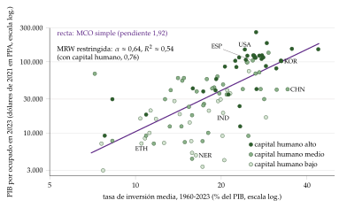
Fuente: elaboración propia a partir de Groningen Growth and Development Centre (2025) (Penn World Table 11.0; países no petroleros con al menos un millón de habitantes).
e) Valoración
Aportación: devuelve al modelo de Solow al centro del debate empírico y muestra que la acumulación de factores, bien medida, explica mucho de las diferencias de renta entre países.
Críticas:
la matrícula en secundaria es una mala medida de \(s_H\) y exagera las diferencias de capital humano entre países; con medidas basadas en los rendimientos de la educación, el capital humano explica mucho menos y la productividad, \(A\), la mayor parte (véanse las extensiones);
suponer que \(A_0\) no está correlacionado con las tasas de inversión es poco creíble: los países con mejores instituciones invierten más y son más productivos (anexo F);
supone la misma tecnología y el mismo \(g\) en todos los países, y deja sin explicar el progreso técnico.
Estas críticas llevan a los modelos en los que el capital humano o las ideas generan crecimiento endógeno, como el de Uzawa y Lucas [ver tema 3.A.44].
II.2. Otras extensiones del modelo de Solow
Una vez visto el capital humano, repasamos otras extensiones que cambian un supuesto del modelo: la forma de la función de producción (trampas de pobreza), los factores fijos (recursos naturales), los activos (dinero) y los sectores; cerramos con la que cambia la conclusión, los rendimientos no decrecientes.
Trampas de pobreza
a) Idea
¿Puede un país quedarse atrapado en una renta baja aunque sus parámetros le permitirían una alta? Sí, si la productividad media del capital no decrece siempre. «Al perro flaco todo son pulgas»: la pobreza impide ahorrar lo bastante para salir de ella.
b) Modelo
Supuestos: los de Solow, pero con una función de producción con forma de S (sigmoide), con rendimientos decrecientes cuando hay poco capital (una economía agraria), crecientes en un tramo intermedio (infraestructuras, externalidades o una tecnología moderna que solo compensa a partir de un umbral) y otra vez decrecientes cuando hay mucho (Azariadis y Drazen, 1990).
Desarrollo: en la representación en tasas, \(s\,f(k)/k\) ya no es monótona: decrece, crece y vuelve a decrecer, y corta 3 veces a la horizontal \(n+g+\delta\) (gráfico 12).
Hay 2 estados estacionarios estables, uno pobre (\(k_B\)) y otro rico (\(k_A\)), separados por uno inestable (\(k_U\)), que es el umbral.
Las condiciones de Inada se pueden seguir cumpliendo: hablan del comportamiento de \(f'\) cerca de cero y en el infinito, no del tramo intermedio.
Implicaciones: la renta a largo plazo depende de dónde se parte. Una ayuda pequeña no saca de la trampa; un gran empujón (big push) que lleve el capital más allá de \(k_U\) sí, y después puede retirarse (Rosenstein-Rodan, 1943; Murphy, Shleifer y Vishny, 1989). La misma trampa aparece si la tasa de ahorro o el crecimiento de la población dependen de la renta (trampa malthusiana).
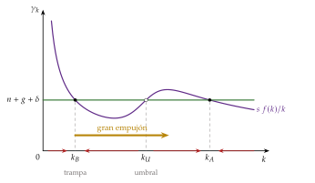
Fuente: elaboración propia a partir de Sala-i-Martín (2000, cap. 1) y Barro y Sala-i-Martin (2004, cap. 1).
c) Evidencia empírica
Hay poca evidencia de trampas de pobreza a escala de países: casi todos los países pobres han crecido a largo plazo (Kraay y McKenzie, 2014). Las trampas y su papel en la política de desarrollo se estudian en [ver tema 3.B.28].
d) Valoración
La trampa no la predijo Solow: es de la literatura posterior, que cambió la forma de la función de producción. Su lección es que la política puede importar mucho en el punto de partida, aunque no cambie el crecimiento a largo plazo.
Recursos naturales: ¿hay límites al crecimiento?
Idea: la tierra es fija y los recursos no renovables se agotan. ¿Puede crecer para siempre una economía que los necesita?
Modelo: con tierra \(T\) constante y un recurso \(R_t\) cuyo uso cae a la tasa \(b\) (\(\gamma_R=-b\)), \[Y_t=K_t^{\alpha}R_t^{\alpha_R}T^{\alpha_T}(A_tL_t)^{1-\alpha-\alpha_R-\alpha_T},\] donde \(\alpha_R\) y \(\alpha_T\) son las participaciones del recurso y de la tierra16. En la senda equilibrada, \(K\) e \(Y\) crecen al mismo ritmo, y la renta por trabajador crece a \[\gamma_{Y/L}=\frac{(1-\alpha-\alpha_R-\alpha_T)\,g-(\alpha_R+\alpha_T)\,n-\alpha_R\,b}{1-\alpha}.\]
Implicaciones: los factores fijos y agotables restan crecimiento, un lastre que aumenta con \(n\) y con \(b\), pero no impiden crecer si el progreso técnico es lo bastante rápido (D. Romer, 2019, cap. 1). Nordhaus, Stavins y Weitzman (1992) estimó ese lastre en unas décimas de punto al año. Con recursos agotables, Solow (1974) y Stiglitz (1974) muestran que el consumo puede mantenerse si el capital sustituye al recurso.
El clima: el modelo que añade a esta lógica los daños del calentamiento y la elección óptima del ahorro es una extensión del de Ramsey, Cass y Koopmans (apartado III.3).
Dinero y 2 sectores
Dinero: Tobin (1965) introduce el dinero como depósito de valor alternativo al capital. Más inflación encarece tener dinero, la cartera se desplaza hacia el capital y sube la renta de estado estacionario (efecto Mundell-Tobin), pero no su tasa de crecimiento. Con hogares que optimizan, Sidrauski (1967) obtiene el resultado contrario: el dinero es superneutral y la inflación no afecta al capital del estado estacionario [ver tema 3.A.41].
2 sectores: Uzawa (1961b, 1963) separa el sector de bienes de consumo del de bienes de capital. El estado estacionario es único y estable si el sector de bienes de consumo es más intensivo en capital que el de bienes de capital.
Hacia el crecimiento endógeno
El crecimiento exógeno nace de los rendimientos decrecientes del capital. Si no decrecen, la acumulación sí sostiene el crecimiento:
en el modelo \(AK\) (Rebelo, 1991), con \(Y=AK\) y \(A\) constante, \(\gamma_{Y/L}=s\,A-(n+\delta)\): una tasa de ahorro mayor sube el crecimiento para siempre;
en el modelo Sobelow (L. E. Jones y Manuelli, 1990), con \(f(k)=Ak+Bk^{\alpha}\), el producto marginal del capital tiende a \(A\) y no a cero: se incumple una condición de Inada, y si \(s\,A>n+\delta\) la economía crece sin límite;
en Barro (1990), el gasto público productivo hace que el capital privado no tenga rendimientos decrecientes [ver tema 3.A.38].
Se estudian, con los que hacen endógeno el progreso técnico, en [ver tema 3.A.44].
Recapitulación y nexo: con capital humano, el modelo de Solow explica mejor las diferencias de renta, pero el ahorro sigue siendo una regla y no una decisión. Pasamos al modelo en el que los hogares eligen cuánto ahorrar.
III. El modelo de Ramsey-Cass-Koopmans
En el cante (11′). La pizarra se borra salvo la esquina izquierda (ecuación de Solow, regla de oro y renta de MRW). La idea y la solución descentralizada (6′): qué cambia frente a Solow, en 0′45″; el problema del hogar escrito una vez con su restricción, el hamiltoniano de palabra y la ecuación de Euler recuadrada; las empresas y el equilibrio, con la ecuación de acumulación recuadrada; el diagrama de fases del gráfico 13 por capas a la derecha (ejes, \(\dot k=0\) con \(k_{\mathrm{oro}}\), \(\dot c=0\), flechas, senda de silla), y la caída de \(\rho\) como capa del mismo diagrama. El análisis normativo (2′30″): el planificador y los 2 teoremas de palabra; la regla de oro modificada recuadrada junto a la de Solow, que sigue en la esquina, y la pegatina «la avaricia rompe el saco» tachada: aquí no hay ineficiencia dinámica; la velocidad de convergencia y el crecimiento exógeno, de palabra. Las extensiones, la evidencia y la valoración (2′30″): el gasto permanente y el temporal como capa nueva del diagrama (desplazamiento de \(\dot k=0\)), los impuestos y la equivalencia ricardiana de palabra, el clima y los ciclos reales en una frase. Las condiciones de primer orden paso a paso, el problema del planificador y las demostraciones de los teoremas están en el anexo E.
Conclusión anticipada: cuando el ahorro lo eligen hogares que optimizan, los resultados positivos de Solow se mantienen (estado estacionario estable, crecimiento exógeno a largo plazo, convergencia condicional), pero el modelo gana una dimensión normativa. El equilibrio competitivo coincide con la solución de un planificador benevolente, es eficiente y nunca acumula capital de más: la regla de oro relevante es la modificada, \(f'(k^*)=\rho+\delta+\theta g\). Y el modelo pasa a ser el marco del análisis de la política fiscal.
Nexo: una vez visto que la acumulación de factores explica el nivel de la renta pero no su crecimiento a largo plazo, y que el ahorro de Solow es una regla sin fundamento, pasamos a preguntarnos cuánto ahorran unos hogares racionales y si ese ahorro es el que conviene.
III.1. Idea y solución descentralizada
a) Idea
El origen: Ramsey (1928)17 se preguntó cuánto debe ahorrar una nación. Cass (1965) y Koopmans (1965)18 incorporan su análisis al modelo neoclásico de crecimiento: es el modelo de Solow con hogares que deciden cuánto consumir y cuánto ahorrar maximizando su utilidad en un horizonte infinito19.
Las 2 ventajas sobre Solow:
la tasa de ahorro es endógena: responde al tipo de interés y a lo que los hogares esperan del futuro;
hay una función de utilidad, lo que permite el análisis normativo: ¿es eficiente el equilibrio de mercado?
3 formas de contarlo, con el mismo resultado: como equilibrio competitivo entre hogares y empresas, como un hogar que produce para sí mismo, o como el problema de un planificador benevolente. Empezamos por la solución descentralizada, que es la que describe una economía de mercado, y en el apartado III.2 la comparamos con la del planificador.
b) Modelo
i) Supuestos
Lo que se mantiene: los supuestos de producción del modelo de Solow (apartado I.2): economía cerrada sin sector público, un solo bien, \(Y_t=F(K_t,A_tL_t)\) neoclásica con las condiciones de Inada (tabla 1), \(\gamma_A=g\), \(\gamma_L=n\), depreciación \(\delta\) y mercados competitivos. Las empresas alquilan el capital y el trabajo cada instante y les pagan su producto marginal20: \[r_t=f'(k_t)-\delta,\qquad w_t=A_t\left[f(k_t)-k_tf'(k_t)\right].\]
Lo que cambia: la tasa de ahorro deja de ser un dato.
Hay muchos hogares idénticos (su número se normaliza a 1), de vida infinita, que admiten un hogar representativo21. Cada uno tiene \(L_t=e^{nt}\) miembros (\(L_0=1\)), que reparten el consumo por igual y ofrecen cada uno una unidad de trabajo de forma inelástica: el ocio no da utilidad22.
Son dueños del capital, que prestan a las empresas, y eligen la senda de consumo por persona, \(C_t/L_t\), que maximiza \[U_0=\int_0^{\infty}e^{-(\rho-n)t}\,u\!\left(\frac{C_t}{L_t}\right)dt,\qquad u(x)=\frac{x^{1-\theta}-1}{1-\theta},\quad\theta>0.\tag{9}\]
Los 3 elementos de la utilidad:
la utilidad instantánea del consumo por persona es isoelástica (CRRA), como en [ver tema 3.A.8] y [ver tema 3.A.33]. Como no hay incertidumbre, \(\theta\) no mide aquí la aversión al riesgo, sino el deseo de suavizar el consumo en el tiempo: la elasticidad de sustitución intertemporal es \(1/\theta\) [ver tema 3.A.10]. Cuanto mayor es \(\theta\), más cóncava es la función. Con \(\theta\to1\), \(u(x)=\ln x\)23;
el descuento exponencial a la tasa \(\rho>0\), la tasa de preferencia temporal: cuanto mayor es \(\rho\), más impaciente es el hogar (Samuelson, 1937) [ver tema 3.A.29]24;
el tamaño del hogar: el hogar valora la utilidad de cada miembro, \(L_t\,u(C_t/L_t)=e^{nt}u(C_t/L_t)\), y al descontarla a \(\rho\) el descuento efectivo es \(\rho-n\).
Restricción presupuestaria: con \(b_t\) los activos netos por persona, cada persona cobra el salario y el interés de sus activos y consume el resto; como la familia crece, los activos por persona se diluyen a la tasa \(n\) (anexo E): \[\dot b_t=w_t+(r_t-n)\,b_t-\frac{C_t}{L_t},\qquad b_0\ \text{dado}.\]
Condición de no juego de Ponzi: el hogar no puede endeudarse sin límite pagando los intereses con más deuda25: \(\lim_{t\to\infty}b_t\,e^{-\int_0^t(r_\tau-n)d\tau}\geq0\).
Utilidad acotada: en la senda equilibrada, \(C/L\) crece a \(g\) y el integrando de (9) se comporta como \(e^{-[\rho-n-(1-\theta)g]t}\). Para que \(U_0\) sea finita hace falta \[\rho-n>(1-\theta)\,g.\] Con \(g=0\) es \(\rho>n\): el hogar tiene que descontar el futuro más deprisa de lo que crece la familia.
ii) Desarrollo
El problema del hogar y la ecuación de Euler
El hogar resuelve \[\begin{array}{rl}\displaystyle \max_{\{C_t/L_t\}} & \displaystyle \int_0^{\infty}e^{-(\rho-n)t}\,u\!\left(\frac{C_t}{L_t}\right)dt \\ \text{s.a.} & \dot b_t=w_t+(r_t-n)\,b_t-\dfrac{C_t}{L_t} \\ & b_0\ \text{dado} \\ & \lim_{t\to\infty}b_t\,e^{-\int_0^t(r_\tau-n)d\tau}\geq0\end{array}\] Es el problema del consumidor con horizonte infinito, en tiempo continuo [ver tema 3.A.29]: un problema de control óptimo con el consumo como variable de control y los activos como variable de estado. Se resuelve con el principio del máximo (Pontryagin et al., 1962) (anexo D). El hamiltoniano en valor corriente es \[\mathcal{H}_t=u\!\left(\frac{C_t}{L_t}\right)+\lambda_t\left[w_t+(r_t-n)\,b_t-\frac{C_t}{L_t}\right],\] donde el coestado \(\lambda_t\) es el valor, en utilidad de \(t\), de un euro más de activos en \(t\)26.
Condiciones de primer orden (anexo E):
control, \(\partial\mathcal{H}_t/\partial(C_t/L_t)=0\): \((C_t/L_t)^{-\theta}=\lambda_t\). La utilidad marginal de consumir iguala el valor de ahorrar;
coestado, \(\dot\lambda_t=(\rho-n)\lambda_t-\partial\mathcal{H}_t/\partial b_t\): \(\dot\lambda_t/\lambda_t=\rho-r_t\). El valor de un euro más de activos cae si el ahorro rinde más que la impaciencia;
transversalidad, \(\lim_{t\to\infty}e^{-(\rho-n)t}\lambda_t\,b_t=0\): en el límite, el valor actual de los activos que se dejan es nulo; si no, se podría consumir más. No es un añadido arbitrario: en condiciones generales es necesaria para el óptimo (Michel, 1982).
Tomando logaritmos en la primera, derivando respecto al tiempo y sustituyendo la segunda se obtiene la ecuación de Euler (o de Keynes-Ramsey), por persona y, con \(C_t/L_t=A_tc_t\) y \(r_t=f'(k_t)-\delta\), por unidad de trabajo eficiente:
\[\gamma_{C/L}=\frac{r_t-\rho}{\theta}\qquad\Longleftrightarrow\qquad\frac{\dot c_t}{c_t}=\frac{f'(k_t)-\delta-\rho-\theta g}{\theta}\tag{10}\]
el consumo por persona crece si el tipo de interés supera a la impaciencia, \(r_t>\rho\), y cae si es menor; y tanto más cuanto mayor es la elasticidad de sustitución intertemporal, \(1/\theta\)27;
el término \(\theta g\) aparece porque, si la tecnología crece, el hogar ya espera ser más rico y quiere adelantar consumo;
leída al revés, \(r=\rho+\theta\gamma_{C/L}\), es la fórmula de Ramsey con que se descuenta el futuro en la economía del cambio climático [ver tema 3.B.31];
el consumo no depende de la renta corriente, sino de toda la senda de salarios y tipos de interés, como en la renta permanente [ver tema 3.A.33].
El equilibrio
El mercado de bienes se vacía y los préstamos entre hogares se cancelan: los activos netos de cada persona son el capital por persona, \(b_t=K_t/L_t=A_tk_t\). Sustituyendo los precios de los factores en la restricción del hogar, \(A_t(\dot k_t+g\,k_t)=A_t\left[f(k_t)-k_tf'(k_t)\right]+\left[f'(k_t)-\delta-n\right]A_tk_t-A_tc_t\), se obtiene la ecuación de acumulación:
\[\dot k_t=f(k_t)-c_t-(n+g+\delta)\,k_t\tag{11}\]
Es la ecuación fundamental de Solow con el ahorro, \(f(k_t)-c_t\), endógeno en lugar de \(s\,f(k_t)\).
Las ecuaciones (10) y (11), con \(k_0\) dado y la condición de transversalidad, forman el sistema dinámico del modelo en \((k,c)\).
El estado estacionario y el diagrama de fases
Los 2 lugares (gráfico 13):
\(\dot c=0\) es una vertical en el \(k^*\) que cumple \(f'(k^*)=\rho+\delta+\theta g\), la regla de oro modificada (apartado III.2). A su izquierda, el producto marginal del capital es alto, el ahorro rinde más que la impaciencia y el consumo crece; a su derecha, cae;
\(\dot k=0\) es \(c=f(k)-(n+g+\delta)k\), una U invertida con su máximo en el \(k_{\mathrm{oro}}\) de Solow, \(f'(k_{\mathrm{oro}})=n+g+\delta\), que vuelve a cortar el eje en \(\bar k\). Por encima, se consume más de lo que queda tras reponer el capital y \(k\) baja; por debajo, sube.
El estado estacionario \(E=(k^*,c^*)\) es único. Como la utilidad acotada exige \(\rho-n>(1-\theta)g\), es decir, \(\rho+\theta g>n+g\), se cumple \(f'(k^*)>f'(k_{\mathrm{oro}})\) y \(k^*<k_{\mathrm{oro}}\): \(E\) queda a la izquierda del máximo. Con una Cobb-Douglas, \[k^*=\left(\frac{\alpha}{\rho+\delta+\theta g}\right)^{\frac{1}{1-\alpha}}<k_{\mathrm{oro}}=\left(\frac{\alpha}{n+g+\delta}\right)^{\frac{1}{1-\alpha}},\qquad s^*=\frac{\alpha(n+g+\delta)}{\rho+\delta+\theta g}<\alpha=s_{\mathrm{oro}}.\] Con \(\alpha=1/3\), \(\rho=0{,}02\), \(\delta=0{,}05\), \(n=0{,}01\), \(g=0{,}02\) y \(\theta=2\), la tasa de ahorro de estado estacionario es del 24 %.
La senda equilibrada: como en Solow, \(k\) y \(c\) son constantes, las variables por persona crecen a \(g\) y las agregadas a \(n+g\); el tipo de interés es \(r^*=\rho+\theta g\).
La dinámica: un punto de silla. \(k\) es una variable predeterminada, que solo cambia poco a poco; \(c\) puede saltar. Dado \(k_0\), hay un solo consumo inicial que pone a la economía en la senda de silla, la única que lleva a \(E\); el hogar lo elige, y \(k\) y \(c\) convergen juntos por ella.
Si el consumo inicial es mayor (punto B), el capital se acaba antes o después; a partir de ahí el consumo debería desplomarse de un salto, algo incompatible con la ecuación de Euler.
Si es menor (punto C), la economía acaba en \((\bar k,0)\), con un tipo de interés menor que \(n+g\): acumularía capital del que nunca consumiría y viola la condición de transversalidad.
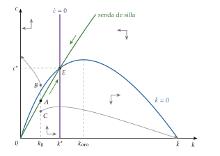
Fuente: elaboración propia a partir de D. Romer (2019, cap. 2) y Acemoglu (2009, cap. 8, fig. 8.1).
Estática comparativa: una caída de la tasa de descuento
Si los hogares se vuelven más pacientes (\(\rho\downarrow\)), el lugar \(\dot c=0\) se desplaza a la derecha y el nuevo \(k^*\) es mayor (gráfico 14).
En el momento del cambio, \(k\) no puede saltar, pero el consumo sí: cae hasta la nueva senda de silla. Desde ahí, \(k\) y \(c\) suben juntos hasta el nuevo estado estacionario, con más capital, más renta y más consumo, porque \(k^*<k_{\mathrm{oro}}\).
La tasa de ahorro sube, el tipo de interés baja (\(r^*=\rho+\theta g\)) y la economía crece más deprisa durante la transición, pero a largo plazo vuelve a crecer a \(g\): como la subida de \(s\) en Solow, un efecto nivel.
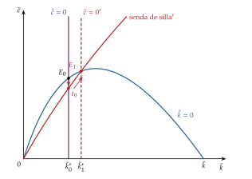
Fuente: elaboración propia a partir de D. Romer (2019, cap. 2, fig. 2.6).
III.2. Análisis normativo e implicaciones
Una vez resuelto el equilibrio de mercado, la pregunta normativa es doble: ¿alcanza el mercado el mayor bienestar posible? ¿Hace falta un planificador para lograrlo?
El planificador y los teoremas del bienestar
El problema del planificador benevolente: elige directamente la senda de consumo que maximiza la utilidad del hogar representativo, sujeto solo a los recursos de la economía. En unidades eficientes, y quitando constantes que no cambian la solución, \[\begin{array}{rl}\displaystyle \max_{\{c_t\}} & \displaystyle \int_0^{\infty}e^{-[\rho-n-(1-\theta)g]t}\,\frac{c_t^{1-\theta}}{1-\theta}\,dt \\ \text{s.a.} & \dot k_t=f(k_t)-c_t-(n+g+\delta)\,k_t \\ & k_0\ \text{dado}\end{array}\] Sus condiciones de primer orden dan exactamente las ecuaciones (10) y (11) y la misma condición de transversalidad (anexo E).
Primer teorema fundamental de la economía del bienestar (1TFEB): el equilibrio competitivo del modelo coincide con la solución del planificador y es, por tanto, un óptimo de Pareto. Se cumplen los supuestos del 1TFEB [ver tema 3.A.22]: agentes precio-aceptantes, mercados completos (de bienes, de factores y de préstamos en cada momento), ausencia de externalidades (la tecnología crece de forma exógena, sin depender de lo que invierta nadie) e información perfecta. El tipo de interés de mercado hace el papel del precio sombra del capital del planificador.
Segundo teorema (2TFEB): la senda óptima del planificador puede alcanzarse como equilibrio competitivo con los precios \(r_t=f'(k_t)-\delta\) y \(w_t=A_t[f(k_t)-k_tf'(k_t)]\). Con hogares idénticos no hacen falta transferencias; con hogares distintos bastarían transferencias de suma fija.
¿Y en Solow? Sin preferencias, solo cabe un análisis positivo y la comprobación de si \(k^*>k_{\mathrm{oro}}\). No es que allí falle el 1TFEB, sino que no se puede plantear.
La regla de oro modificada
En el estado estacionario del óptimo, el producto marginal neto del capital iguala la impaciencia más el deseo de adelantar consumo de una economía que crece:
\[f'(k^*)=\rho+\delta+\theta g\tag{12}\]
Frente a la regla de oro de Solow (tabla 3), la impaciencia hace que se acumule menos capital: no compensa sacrificar consumo hoy por más consumo en un futuro que se descuenta. Por eso el equilibrio nunca es dinámicamente ineficiente: aquí «la avaricia» no «rompe el saco», y no hay razón de eficiencia para que el Estado fomente el ahorro.
La eficiencia depende de los supuestos: con generaciones solapadas (Diamond, 1965) el equilibrio competitivo puede ser dinámicamente ineficiente [ver tema 3.A.29], y con externalidades del capital o del conocimiento el mercado invierte de menos [ver tema 3.A.44].
| Regla de oro (Solow, Phelps) | Regla de oro modificada (RCK) | |
|---|---|---|
| Condición | \(f'(k_{\mathrm{oro}})=n+g+\delta\) | \(f'(k^*)=\rho+\delta+\theta g\) |
| Qué maximiza | el consumo de estado estacionario | la utilidad descontada de los hogares |
| Relación | con \(\rho-n>(1-\theta)g\): \(\rho+\theta g>n+g\) y, por tanto, \(k^*<k_{\mathrm{oro}}\) | |
| Ineficiencia dinámica | posible, si \(s>s_{\mathrm{oro}}\) | imposible: la impaciencia lleva a acumular menos |
Fuente: elaboración propia a partir de D. Romer (2019, cap. 2) y Acemoglu (2009, cap. 8).
Convergencia y velocidad de ajuste
Convergencia condicional: los países con los mismos parámetros (\(\rho\), \(\theta\), \(n\), \(g\), \(\delta\) y tecnología) convergen al mismo estado estacionario; los que difieren, a los suyos.
Velocidad de convergencia: linealizando el sistema alrededor de \(E\) (anexo C), con una Cobb-Douglas (Barro y Sala-i-Martin, 2004, cap. 2), \[2\lambda=\sqrt{\zeta^2+4\,\frac{1-\alpha}{\theta}\,(\rho+\delta+\theta g)\left[\frac{\rho+\delta+\theta g}{\alpha}-(n+g+\delta)\right]}-\zeta,\qquad \zeta\equiv\rho-n-(1-\theta)g.\]
Cuanto mayor es \(\theta\) (más deseo de suavizar), más lenta es la convergencia: el hogar no quiere sacrificar mucho consumo cuando es pobre para crecer deprisa, y la senda de silla es más plana (gráfico 15).
Con los valores de antes, la velocidad es del 10 % anual con \(\theta=1\), del 8 % con \(\theta=2\) y del 7 % con \(\theta=4\), frente al 5 % de Solow con la misma \(\alpha\) y \(n+g+\delta=0{,}08\): para acercarse al 2 % observado hace falta un capital en sentido amplio, con una participación de en torno a 0,75.
La tasa de ahorro en la transición: con una Cobb-Douglas, la tasa de ahorro baja a medida que la economía se enriquece si \(\theta<1/s^*\), sube si \(\theta>1/s^*\) y es constante si \(\theta=1/s^*\), el caso en que el modelo se comporta como el de Solow (Barro y Sala-i-Martin, 2004, cap. 2). Con los valores de antes, \(1/s^*\) ronda 4: la tasa de ahorro es más alta cuando el país es pobre.
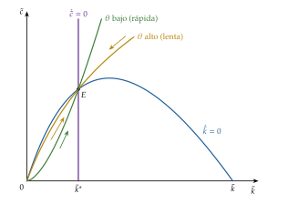
Fuente: elaboración propia a partir de Barro y Sala-i-Martin (2004, cap. 2); dibujado con \(g=0\), para que \(k^*\) no dependa de \(\theta\).
Crecimiento exógeno
Como en Solow, a largo plazo la renta y el consumo por persona crecen a \(g\). Hacer endógeno el ahorro no cambia la conclusión: con rendimientos decrecientes, la acumulación de capital no sostiene el crecimiento. La política puede cambiar el nivel de la renta, no su tasa de crecimiento a largo plazo [ver tema 3.A.44].
III.3. Extensiones, evidencia empírica y valoración
c) Extensiones
El sector público: el modelo es el marco de referencia para analizar la política fiscal con hogares que miran al futuro [ver tema 3.A.38]. Introducimos un gasto público en bienes, \(G_t\), que no da utilidad ni aumenta la producción.
Gasto financiado con impuestos de suma fija: la restricción de recursos pasa a ser \(\dot k_t=f(k_t)-c_t-G_t/(A_tL_t)-(n+g+\delta)\,k_t\); la ecuación de Euler no cambia.
Un aumento permanente e inesperado desplaza el lugar \(\dot k=0\) hacia abajo en la cuantía del gasto. El consumo cae en esa misma cuantía en el momento del anuncio y la economía sigue en el estado estacionario: el capital y el tipo de interés no cambian. Es una expulsión completa del consumo privado (gráfico 16, panel izquierdo).
Un aumento temporal: el consumo cae menos que el gasto, porque el hogar reparte el coste en el tiempo; mientras dura, el capital baja y el tipo de interés sube, y cuando termina la economía está justo sobre la senda de silla original y vuelve por ella al estado estacionario inicial (panel derecho).
Financiar el gasto con deuda en lugar de con impuestos de suma fija no cambia nada si los hogares tienen horizonte infinito: es la equivalencia ricardiana (Barro, 1974) [ver tema 3.A.39].
Impuestos distorsionantes:
un impuesto proporcional y constante sobre el consumo no altera el precio relativo del consumo presente y futuro, así que no distorsiona el ahorro; con oferta de trabajo inelástica, tampoco el impuesto sobre las rentas del trabajo: los 2 actúan como uno de suma fija28;
un impuesto a tipo \(\tau_K\) sobre las rentas del capital reduce el rendimiento del ahorro: la ecuación de Euler pasa a ser \(\dot c/c=[(1-\tau_K)(f'(k)-\delta)-\rho-\theta g]/\theta\), el lugar \(\dot c=0\) se desplaza a la izquierda y el nuevo estado estacionario tiene menos capital, renta y consumo; en el momento de la subida, el consumo salta hacia arriba (gráfico 17). Un impuesto sobre la riqueza tiene el mismo efecto que uno sobre las rentas del capital de tipo equivalente;
por eso, en este modelo, el impuesto óptimo sobre las rentas del capital a largo plazo es nulo: es el resultado de Chamley (1986) y Judd (1985) [ver tema 3.A.38].
El clima: el modelo DICE de Nordhaus es un modelo de Ramsey, Cass y Koopmans con 2 añadidos, los daños del calentamiento y la posibilidad de reducir emisiones a un coste: elige a la vez cuánto invertir en capital y cuánto en «capital natural», y su ecuación de Euler da la tasa con que se descuentan los daños futuros [ver tema 3.B.31].
Los ciclos reales: añadiéndole la elección de horas de trabajo y perturbaciones de productividad, es el modelo de los ciclos reales (Kydland y Prescott, 1982; King, Plosser y Rebelo, 1988) y el núcleo de los modelos de equilibrio general dinámicos y estocásticos [ver tema 3.A.42].
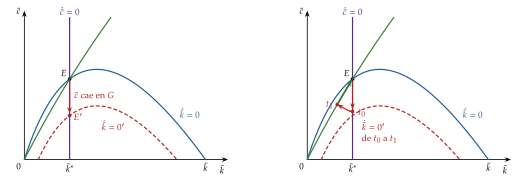
Fuente: elaboración propia a partir de D. Romer (2019, cap. 2, figs. 2.8 y 2.9) y Barro y Sala-i-Martin (2004, fig. 3.2).

Fuente: elaboración propia a partir de Acemoglu (2009, cap. 8, fig. 8.2), que muestra la bajada del impuesto, y Barro y Sala-i-Martin (2004, fig. 3.1).
d) Evidencia empírica
Velocidad de convergencia: con la participación del capital físico, el modelo converge más deprisa que el de Solow, entre el 7 y el 10 % anual, frente a una velocidad observada de entre el 1,4 y el 2 % (Mankiw, Romer y Weil, 1992, tabla V); el capital en sentido amplio, con el humano, acerca el modelo a los datos (Barro y Sala-i-Martin, 2004, cap. 2).
Ahorro en la transición: con valores habituales, el modelo predice que la tasa de ahorro baja según el país se enriquece; en Japón y en los países del este de Asia subió durante su despegue, lo que exige un \(\theta\) muy alto u otros mecanismos, como la formación de hábitos (Carroll, Overland y Weil, 2000).
Eficiencia dinámica: en las grandes economías avanzadas, los beneficios del capital superan año tras año a la inversión, señal de que no acumulan de más (Abel et al., 1989), como predice el modelo.
Tipo de interés y crecimiento: la regla de oro modificada, \(r^*=\rho+\theta g\), liga el tipo de interés real a largo plazo con el crecimiento de la productividad. Buena parte de la caída del tipo de interés natural en las economías avanzadas desde los 90 acompaña a la caída del crecimiento tendencial (Holston, Laubach y Williams, 2017).
e) Valoración
Aportaciones:
microfundamenta el ahorro y permite el análisis de bienestar: el equilibrio de mercado es eficiente y la regla de oro relevante es la modificada;
la tasa de ahorro cambia en la transición según \(\theta\), y con ella la velocidad de convergencia: las preferencias importan;
es la base del análisis de la política fiscal, de los ciclos reales y de los modelos de equilibrio general que usan los bancos centrales.
Limitaciones:
el crecimiento por persona sigue siendo exógeno: el modelo cambia el nivel de la renta, no su tasa de crecimiento [ver tema 3.A.44];
el hogar representativo de vida infinita excluye la heterogeneidad y los conflictos entre generaciones; con generaciones solapadas cambian la eficiencia y la equivalencia ricardiana [ver tema 3.A.29];
con mercados completos y competitivos, la política no tiene nada que corregir; cuando el conocimiento tiene externalidades, el mercado invierte de menos.
Recapitulación: hacer endógeno el ahorro da al modelo de crecimiento su dimensión normativa, pero no explica el crecimiento: para ello hay que hacer endógeno el progreso técnico, que es la tarea de los modelos de crecimiento endógeno [ver tema 3.A.44].
Conclusión
Recapitulación: En conclusión,
el modelo de Solow sustituye las proporciones fijas de Harrod y Domar por una tecnología neoclásica: la senda equilibrada es estable, pero los rendimientos decrecientes del capital hacen que, a largo plazo, la renta por trabajador crezca solo al ritmo del progreso técnico, exógeno. El ahorro tiene efecto nivel, no efecto crecimiento, y las economías convergen de forma condicional;
el modelo ampliado de Mankiw, Romer y Weil añade el capital humano: con un capital en sentido amplio de 2/3, explica buena parte de las diferencias de renta entre países y una convergencia lenta, del 2 % anual;
el modelo de Ramsey, Cass y Koopmans hace endógeno el ahorro: el equilibrio de mercado es eficiente, sigue la regla de oro modificada y nunca acumula de más; pero el crecimiento sigue siendo exógeno.
Relevancia: estos modelos ordenan el debate de política económica. El ahorro, la inversión y la educación suben el nivel de vida; solo la productividad sostiene su crecimiento. Y siguen en uso: la contabilidad del crecimiento parte de la función de Solow [ver tema 3.A.45], y el modelo de Ramsey, Cass y Koopmans es el núcleo de los modelos con que se analizan la política fiscal y la monetaria [ver tema 3.A.42].
Extensiones: la pregunta que queda abierta, de dónde sale el progreso técnico, la responden los modelos de crecimiento endógeno desde P. M. Romer (1986) y Lucas (1988) [ver tema 3.A.44]; la evidencia sobre las fuentes del crecimiento y la convergencia, en [ver tema 3.A.45]; las causas últimas (instituciones, geografía, cultura; anexo F) y la economía del desarrollo, en [ver tema 3.B.28]; el crecimiento con el clima, en [ver tema 3.B.31].
Opinión: estos modelos no explican por qué crecen las economías, pero dicen con precisión qué no basta para crecer: acumular capital. Esa conclusión negativa es su gran aportación, porque obliga a mirar a la productividad y a lo que la determina. Como señaló Lucas (2003), lo que se puede ganar en bienestar con mejores políticas de largo plazo supera con mucho lo que se gana afinando la estabilización a corto.
Idea final: a la pregunta del principio, si se puede crecer para siempre acumulando capital, los 3 modelos responden que no. La Unión Soviética lo comprobó: acumuló capital sin cesar y su crecimiento se apagó. Estados Unidos, en cambio, ha crecido en torno al 2 % anual durante siglo y medio porque cada generación ha aprendido a producir más con lo mismo, aunque parte de ese impulso no puede durar siempre (C. I. Jones, 2023). «Poco a poco se va lejos», sí, pero solo si cada paso mejora la forma de andar: lo que lleva lejos no es acumular, sino innovar.
A. Anexo: el modelo de Harrod-Domar
Idea
Tras la Teoría general de Keynes (1936), varios autores intentaron llevar su análisis del corto al largo plazo. Harrod (1939) y Domar (1946) lo hicieron por separado, con modelos que difieren en detalles pero tienen las mismas implicaciones, por lo que se estudian juntos.
Son modelos de inspiración keynesiana, por 3 rasgos:
el énfasis en la demanda;
la inversión según el acelerador [ver tema 3.A.34];
desequilibrios persistentes que separan la producción de la de pleno empleo.
Su novedad respecto a Keynes es el largo plazo. Su mensaje: el crecimiento resulta de la acumulación de capital, pero es muy difícil que siga una senda equilibrada.
El modelo de Harrod: supuestos
Demanda: economía cerrada, sin sector público y con un solo bien, de modo que en equilibrio \(S_t=I_t\). Pero no hay un tipo de interés flexible que garantice esa igualdad en cada momento: es la clave del modelo.
Tecnología: coeficientes fijos (Leontief)29: \[Y_t=\min\left\{\frac{K_t}{v},\ \frac{L_t}{a_L}\right\},\] donde \(v\equiv K/Y\) es el capital necesario por unidad de producto (la relación capital-producto) y \(a_L\equiv L/Y\) el trabajo necesario por unidad de producto, los 2 constantes30. Capital y trabajo son complementarios y no se sustituyen: solo una combinación produce de forma eficiente cada nivel de producción, y las demandas de factores no dependen de sus precios. Con pleno empleo de los 2, \(Y_t=K_t/v=L_t/a_L\).
Hogares: ahorran una fracción constante \(s\) de la renta, \(S_t=s\,Y_t\); la población es la fuerza de trabajo y crece a la tasa \(n\).
Inversión: la del acelerador simple, con expectativas estáticas (los empresarios esperan que la producción cambie lo mismo que en el último periodo): \(I_t=v\,\Delta Y^e_{t+1}=v\,\Delta Y_t\).
Desarrollo: la tasa garantizada y la tasa natural
Tasa garantizada: igualando ahorro e inversión, \[s\,Y_t=v\,\Delta Y_t\qquad\Longrightarrow\qquad\frac{\Delta Y_t}{Y_t}=\frac{s}{v}.\] Es la tasa de crecimiento de equilibrio, que Harrod llama garantizada: la que mantiene a los empresarios satisfechos con su inversión. Depende de las preferencias de los ahorradores, \(s\), y de la tecnología, \(v\).
Es inestable, porque no hay tipo de interés que iguale el ahorro y la inversión tras una perturbación31:
senda implosiva: si \(s\,Y_t>v\,\Delta Y_t\), sobra ahorro y la economía crece por debajo de \(s/v\). La oferta supera a la demanda, los empresarios revisan a la baja la producción y, con ella, el capital que desean, la inversión y la demanda: el crecimiento es cada vez menor;
senda explosiva: si \(s\,Y_t<v\,\Delta Y_t\), sobra inversión y la economía crece por encima de \(s/v\). La demanda supera a la oferta, los empresarios revisan al alza la producción, el capital deseado y la inversión: el crecimiento es cada vez mayor.
El crecimiento equilibrado está en el filo de la navaja, como lo describió Solow (1956, 65): el sistema es muy inestable y nada lo devuelve a la tasa garantizada.
Tasa natural: aunque la tasa garantizada fuera estable, no tendría por qué ser la de pleno empleo. Crecer con pleno empleo exige crecer al ritmo de la población activa, \(n\), la tasa natural: \[\underbrace{\frac{s}{v}}_{\text{garantizada}}=\underbrace{n}_{\text{natural}}.\] Como \(s\), \(v\) y \(n\) se determinan de forma independiente y fuera del modelo, nada garantiza la igualdad: es muy improbable.
Implicaciones
La economía de mercado es inestable, y la intervención del sector público es necesaria para acercarla a sendas equilibradas: una política fiscal anticíclica, con más inversión pública cuando sobra ahorro y menos cuando sobra inversión.
El modelo de Domar: la doble naturaleza de la inversión
La inversión aumenta la demanda, por el multiplicador, \(\Delta Y^D_t=\Delta I_t/s\), y la capacidad productiva, \(\Delta Y^{\mathrm{cap}}_t=I_t/v\), donde \(1/v\) es la productividad del capital nuevo32.
Si la demanda y la capacidad han de avanzar a la par, \(\Delta I_t/s=I_t/v\), es decir, \(\Delta I_t/I_t=s/v\); y como \(I_t=s\,Y_t\), la producción tiene que crecer a \(\Delta Y_t/Y_t=s/v\): la tasa garantizada de Harrod.
La versión de Barro y Sala-i-Martín
Con la función de Leontief, sin progreso técnico y con depreciación \(\delta\), la producción por trabajador es \[y_t=\min\left\{\frac{k_t}{v},\ \frac{1}{a_L}\right\},\qquad k_t\equiv K_t/L_t\] (gráfico 18).
Si \(k_t<v/a_L\), el capital es el factor escaso: se usa entero, \(y_t=k_t/v\), y solo se emplean \(a_LY_t<L_t\) trabajadores. Sobra trabajo: hay paro.
Si \(k_t>v/a_L\), el trabajo es el factor escaso: todos trabajan, \(y_t=1/a_L\), y sobra capital, que queda ocioso.
Solo con \(k_t=v/a_L\) se usan enteros los 2 factores.
Con ahorro \(s\), \(\dot k_t=s\,y_t-(n+\delta)\,k_t\), y la tasa de crecimiento del capital por trabajador es \[\gamma_k=\begin{cases}s/v-(n+\delta) & \text{si } k<v/a_L,\\ s/(a_Lk)-(n+\delta) & \text{si } k>v/a_L.\end{cases}\]
3 casos, según la relación entre la tasa garantizada, \(s/v\), y la natural (aquí con depreciación), \(n+\delta\):
caso 1, \(s/v>n+\delta\): \(k\) crece hasta \(k^*=s/[a_L(n+\delta)]>v/a_L\). En el estado estacionario sobra capital y, aun así, se sigue invirtiendo para mantenerlo: un resultado absurdo, que nace de suponer que se ahorra lo mismo aunque el capital no rinda nada (gráfico 19);
caso 2, \(s/v<n+\delta\): \(\gamma_k<0\) siempre; el capital por trabajador cae hacia cero y el paro crece sin límite. Harrod y Domar lo veían como una descripción de la Gran Depresión (gráfico 20);
caso 3, \(s/v=n+\delta\): cualquier \(k\leq v/a_L\) se mantiene; solo hay pleno empleo de los 2 factores si, por casualidad, \(k_0=v/a_L\) (gráfico 21).
Las 2 salidas: 2 de los 3 casos dejan recursos ociosos para siempre, y el tercero exige una coincidencia de parámetros exógenos. Se puede hacer variable \(v\), con una función neoclásica (Solow, 1956) (apartado I), o hacer endógena la tasa de ahorro: por el reparto de la renta (Kaldor, 1957; Pasinetti, 1962) o por la optimización de los hogares (apartado III)33.
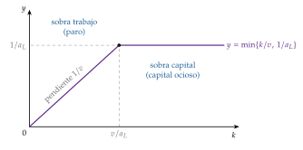
Fuente: elaboración propia a partir de Barro y Sala-i-Martin (2004, cap. 1).
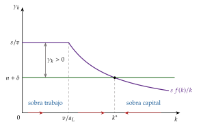
Fuente: elaboración propia a partir de Barro y Sala-i-Martin (2004, cap. 1) y Sala-i-Martín (2000, cap. 2).
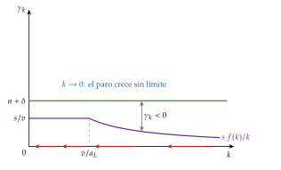
Fuente: elaboración propia a partir de Barro y Sala-i-Martin (2004, cap. 1) y Sala-i-Martín (2000, cap. 2).
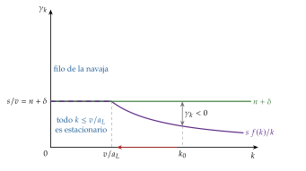
Fuente: elaboración propia a partir de Barro y Sala-i-Martin (2004, cap. 1) y Sala-i-Martín (2000, cap. 2).
| Propiedad | ¿Se cumple? |
|---|---|
| Rendimientos constantes a escala | \(\checkmark\) |
| Productos marginales positivos y decrecientes | \(\times\) |
| Continuamente diferenciable | \(\times\) |
| Estrictamente creciente en \(K\) y en \(L\) | \(\times\) |
| \(F(0,L)=F(K,0)=0\) | \(\checkmark\) |
| \(F\to\infty\) cuando \(K\to\infty\) | \(\times\) |
| \(F_K\to\infty\) cuando \(K\to0\) | \(\times\) |
| \(F_K\to0\) cuando \(K\to\infty\) | \(\checkmark\) |
Fuente: elaboración propia a partir de Barro y Sala-i-Martin (2004, cap. 1).
Valoración
El modelo no puede explicar el crecimiento sostenido de la producción por habitante desde la Revolución Industrial: una economía en el filo de la navaja no concuerda con lo observado34. Según Sala-i-Martín (2000, cap. 2), se debe a unos supuestos difíciles de aceptar:
una función de producción de coeficientes fijos, con una relación capital-producto constante;
un producto marginal del capital fijo, que no se ajusta para estabilizar la economía;
una tasa de ahorro fija, que tampoco se ajusta para evitar el capital ocioso;
un multiplicador constante;
una oferta de trabajo exógena.
Está superado, aunque su énfasis en la inestabilidad influyó en el pensamiento poskeynesiano y su versión de Domar siguió muy viva en las instituciones financieras internacionales (caja siguiente). Su relevancia está en que es la base del modelo de Solow y Swan.
El modelo de Domar en perspectiva histórica
Domar escribió su artículo de 1946 sobre la relación entre la inversión y las recesiones a corto plazo en Estados Unidos, no como un modelo de crecimiento a largo plazo. Como cuenta Easterly (2003, cap. 2), en sus ensayos de 1957 renegó de su uso como tal (Domar, 1957).
Aun así, fue el modelo de crecimiento más aplicado de la historia. Los economistas del desarrollo calculaban la inversión «necesaria» para crecer a una tasa objetivo y llamaban brecha de financiación a la diferencia con el ahorro del país, que debía cubrir la ayuda exterior. Su atractivo era su sencillez: el crecimiento sería proporcional a la tasa de inversión del año anterior.
Escrito tras la Gran Depresión, suponía que siempre habría parados dispuestos a manejar las máquinas nuevas: la producción dependía solo de ellas.
Mientras hubo pocos datos, la relación entre ayuda, inversión y crecimiento pareció funcionar; con más datos, se vio que no se cumplía (Easterly, 2003, cap. 2).
B. Anexo: el progreso técnico aumentador del trabajo y el teorema de Uzawa
Las 3 neutralidades del progreso técnico
Con \(A_t\) el nivel tecnológico, el progreso técnico es (Acemoglu, 2009, cap. 2) [ver tema 3.A.11]:
neutral en el sentido de Hicks, \(Y=A_t\,F(K,L)\): aumenta la productividad de los 2 factores por igual y no cambia la relación marginal de sustitución para cada \(K/L\);
neutral en el sentido de Solow (aumentador del capital), \(Y=F(A_tK,L)\): no cambia las participaciones de los factores para cada \(L/Y\);
neutral en el sentido de Harrod (aumentador del trabajo), \(Y=F(K,A_tL)\): no cambia las participaciones de los factores para cada \(K/Y\).
Con una Cobb-Douglas las 3 coinciden: \(A\,K^{\alpha}L^{1-\alpha}=K^{\alpha}(A^{1/(1-\alpha)}L)^{1-\alpha}=(A^{1/\alpha}K)^{\alpha}L^{1-\alpha}\). La distinción importa cuando la elasticidad de sustitución es distinta de 1.
El teorema de Uzawa
Enunciado (Uzawa, 1961a): sea \(Y_t=\tilde F(K_t,L_t,t)\) con rendimientos constantes en \(K\) y \(L\), \(\dot K_t=Y_t-C_t-\delta K_t\) y \(\gamma_L=n\). Si existe una senda de crecimiento equilibrado en la que \(Y\), \(K\) y \(C\) crecen a tasas constantes, en ella la función de producción admite la representación \(Y_t=G(K_t,A_tL_t)\), con \(G\) de rendimientos constantes y \(\gamma_A=\gamma_Y-n\): el progreso técnico es neutral en el sentido de Harrod.
Demostración (C. I. Jones y Scrimgeour, 2008):
En la senda equilibrada, \(Y\) y \(K\) crecen a la misma tasa: de \(\dot K/K=Y/K-C/K-\delta\), si \(\dot K/K\) es constante, \(Y/K-C/K\) también lo es, y como \(Y\) y \(C\) crecen a tasas constantes, eso solo es posible si \(Y\), \(K\) y \(C\) crecen a la misma tasa, \(\gamma_Y\).
Entonces \(Y_t=e^{\gamma_Yt}Y_0\), \(K_t=e^{\gamma_Yt}K_0\) y \(L_t=e^{nt}L_0\). Evaluando la tecnología en el momento 0 y usando los rendimientos constantes: \[Y_t=e^{\gamma_Yt}\,\tilde F(K_0,L_0,0)=e^{\gamma_Yt}\,\tilde F\!\left(e^{-\gamma_Yt}K_t,\ e^{-nt}L_t,\ 0\right)=\tilde F\!\left(K_t,\ e^{(\gamma_Y-n)t}L_t,\ 0\right).\]
Basta definir \(G(K,AL)\equiv\tilde F(K,AL,0)\) y \(A_t\equiv e^{(\gamma_Y-n)t}\). ∎
Lectura: es una condición necesaria; no dice que la tecnología sea literalmente \(F(K,AL)\), sino que puede escribirse así en la senda equilibrada. Por eso los modelos de este tema suponen desde el principio un progreso técnico aumentador del trabajo, con \(g=\gamma_Y-n=\gamma_{Y/L}\). Una discusión más detallada está en Acemoglu (2009, 59-62) y Sala-i-Martín (2000, cap. 1).
La ecuación fundamental con trabajo eficiente, paso a paso
Con \(k_t\equiv K_t/(A_tL_t)\), \(A_t=A_0e^{gt}\) y \(L_t=L_0e^{nt}\), derivando el cociente, \[\dot k_t=\frac{\dot K_t}{A_tL_t}-k_t\left(\frac{\dot A_t}{A_t}+\frac{\dot L_t}{L_t}\right)=\frac{sY_t-\delta K_t}{A_tL_t}-(n+g)\,k_t=s\,f(k_t)-(n+g+\delta)\,k_t.\]
En el estado estacionario, \(\dot k=0\), y la renta por trabajador, \(Y_t/L_t=A_tf(k^*)\), crece a \(g\): con \(g=0\) el modelo vuelve a la versión con tecnología constante, en la que \(k\) es el capital por trabajador y la renta por trabajador no crece.
C. Anexo: la velocidad de convergencia
En este anexo, \(\lambda\), sin subíndice, es la velocidad de convergencia; \(\lambda_t\), con subíndice, es en el apartado III el coestado del problema del hogar.
a) Modelo de Solow
En logaritmos, (4) se escribe \[\frac{d\ln k_t}{dt}=s\,\frac{f(k_t)}{k_t}-(n+g+\delta)\equiv\Phi(\ln k_t),\] con \(\Phi(\ln k^*)=0\). Una aproximación de Taylor de primer orden alrededor de \(\ln k^*\) da \(d\ln k_t/dt\simeq\Phi'(\ln k^*)\,(\ln k_t-\ln k^*)\).
Como \[\frac{d}{d\ln k}\left[s\,\frac{f(k)}{k}\right]=k\,\frac{d}{dk}\left[s\,\frac{f(k)}{k}\right]=s\,\frac{f(k)}{k}\left[\frac{k\,f'(k)}{f(k)}-1\right]\] y en el estado estacionario \(s\,f(k^*)/k^*=n+g+\delta\), \[\Phi'(\ln k^*)=-(1-\alpha)(n+g+\delta),\qquad \alpha\equiv\frac{k^*f'(k^*)}{f(k^*)}.\]
La ecuación diferencial lineal tiene por solución \[\ln k_t-\ln k^*=e^{-\lambda t}\left(\ln k_0-\ln k^*\right),\qquad \lambda=(1-\alpha)(n+g+\delta).\] Como \(\ln y=\alpha\ln k\) con una Cobb-Douglas, la renta converge a la misma velocidad. ∎
La misma aproximación en niveles, \(\dot k_t\simeq-(1-\alpha)(n+g+\delta)(k_t-k^*)\), da la misma \(\lambda\).
b) Modelo de Mankiw, Romer y Weil
En logaritmos, las ecuaciones (7) son \[\frac{d\ln k}{dt}=s_K\,e^{(\alpha-1)\ln k+\beta\ln h}-(n+g+\delta),\qquad \frac{d\ln h}{dt}=s_H\,e^{\alpha\ln k+(\beta-1)\ln h}-(n+g+\delta).\]
En el estado estacionario, cada exponencial vale \(n+g+\delta\), y la matriz jacobiana respecto a \((\ln k,\ln h)\) es \[J=(n+g+\delta)\begin{pmatrix}\alpha-1 & \beta\\ \alpha & \beta-1\end{pmatrix},\qquad \operatorname{tr}J=-(2-\alpha-\beta)(n+g+\delta),\quad \det J=(1-\alpha-\beta)(n+g+\delta)^2.\]
Sus autovalores, que suman la traza y multiplican el determinante, son \(-(n+g+\delta)\) y \(-(1-\alpha-\beta)(n+g+\delta)\). Los 2 son negativos (el estado estacionario es estable) y el más lento domina la convergencia de la renta: \[\lambda=(1-\alpha-\beta)(n+g+\delta).\] ∎
c) Modelo de Ramsey-Cass-Koopmans
Linealizando (10) y (11) alrededor de \((k^*,c^*)\), y usando \(f'(k^*)=\rho+\delta+\theta g\): \[\begin{pmatrix}\dot k\\ \dot c\end{pmatrix}\simeq\begin{pmatrix}\zeta & -1\\ c^*f''(k^*)/\theta & 0\end{pmatrix}\begin{pmatrix}k-k^*\\ c-c^*\end{pmatrix},\qquad \zeta\equiv f'(k^*)-(n+g+\delta)=\rho-n-(1-\theta)g>0.\]
El determinante, \(c^*f''(k^*)/\theta\), es negativo: un autovalor es positivo y el otro negativo, y el estado estacionario es un punto de silla. La velocidad de convergencia por la senda de silla es el autovalor negativo cambiado de signo: \[\lambda=\frac{1}{2}\left[\sqrt{\zeta^2-4\,\frac{c^*f''(k^*)}{\theta}}-\zeta\right].\]
Con una Cobb-Douglas, \(f''(k^*)=-(1-\alpha)f'(k^*)/k^*\), \(f'(k^*)=\rho+\delta+\theta g\) y \(c^*/k^*=f(k^*)/k^*-(n+g+\delta)=(\rho+\delta+\theta g)/\alpha-(n+g+\delta)\), de donde sale la fórmula del apartado III.2. ∎
D. Anexo: optimización dinámica en tiempo continuo: el control óptimo
Este anexo es común a los temas que resuelven problemas dinámicos en tiempo continuo (la modelización dinámica [ver tema 3.A.29], el crecimiento óptimo de este tema, la inversión [ver tema 3.A.34] y los costes de ajuste del empleo [ver tema 3.A.26]); la versión en tiempo discreto está en el tema del consumo [ver tema 3.A.33].
En este anexo, \(y_t\) (variable de estado) y \(u_t\) (variable de control) son genéricos. En el cuerpo del tema, \(y\) es la producción por trabajador eficiente y \(u(\cdot)\) la utilidad instantánea; en el modelo de Ramsey, Cass y Koopmans, el estado son los activos por persona, \(b_t\), el control es el consumo por persona, \(C_t/L_t\), y la tasa de descuento efectiva es \(\rho-n\) (apartado III.1).
Idea
La optimización estática busca el valor óptimo de unas variables en un momento dado; el tiempo no entra en el problema. Cuando las decisiones de hoy cambian las posibilidades de mañana, hace falta la optimización dinámica, que da una trayectoria óptima completa de cada variable a lo largo del tiempo.
Hay 3 métodos: el cálculo de variaciones, la teoría del control óptimo y la programación dinámica. Usamos la teoría del control óptimo, porque es la de los modelos en tiempo continuo del temario (la q, el modelo de Ramsey, Cass y Koopmans, los costes de ajuste del empleo), trata con naturalidad las restricciones sobre los controles y sus condiciones tienen una lectura económica directa: el multiplicador es el precio sombra del stock.
El problema
El problema tipo es \[\begin{array}{rl}\displaystyle \max_{\{u_t\in U\}} & \displaystyle \int_0^{T}F(t,y_t,u_t)\,dt \\ \text{s.a.} & \dot y_t=f(t,y_t,u_t) \\ & y_0=A\ \text{dado} \\ & y_T=Z\ \ (\text{o } y_T \text{ libre})\end{array}\] con 3 tipos de variables:
el tiempo, \(t\);
la variable de estado, \(y_t\), que describe la situación en cada momento (el capital);
la variable de control, \(u_t\), la que se decide (la inversión).
La ecuación de estado \(\dot y_t=f(t,y_t,u_t)\) hace que, dada la condición inicial, cada senda del control determine la del estado: basta con buscar la senda óptima del control. Se supone que las funciones son continuas y diferenciables y que la integral converge.
El principio del máximo
Lo anunciaron Boltianski, Gamkrelidze y Pontriaguin en 1956 y lo publicaron completo Pontryagin et al. (1962). Se basa en el hamiltoniano en valor presente, \[\mathcal{H}^0(t,y_t,u_t,\lambda^0_t)\equiv F(t,y_t,u_t)+\lambda^0_t\,f(t,y_t,u_t),\] donde \(\lambda^0_t\), la variable de coestado, es un multiplicador de Lagrange dinámico: el valor, en el momento 0, de una unidad más de la variable de estado en \(t\).
Condiciones necesarias:35
el control maximiza el hamiltoniano en cada momento; con solución interior, \(\partial\mathcal{H}^0/\partial u=0\);
ecuación de estado: \(\dot y_t=\partial\mathcal{H}^0/\partial\lambda^0=f(t,y_t,u_t)\);
ecuación de coestado: \(\dot\lambda^0_t=-\partial\mathcal{H}^0/\partial y\);
condición en el momento final: si \(y_T=Z\) está fijado, es una condición terminal y no hace falta nada más; si \(y_T\) es libre, la condición de transversalidad es \(\lambda^0_T=0\) (y si solo se exige \(y_T\geq 0\), \(\lambda^0_T\geq 0\) y \(\lambda^0_T\,y_T=0\)).
Suficiencia. Las condiciones anteriores son necesarias, no suficientes. Son también suficientes si el hamiltoniano es cóncavo en el estado y el control a la vez (Mangasarian) o, de forma más general, si el hamiltoniano maximizado, el que resulta de sustituir el control óptimo, \(\mathcal{H}^{0*}=F(t,y_t,u^*_t)+\lambda^0_t f(t,y_t,u^*_t)\), es cóncavo en el estado (Arrow).
Horizonte infinito
Los modelos de crecimiento óptimo de este tema y de inversión [ver tema 3.A.34] tienen horizonte infinito. Aparecen 2 problemas:
la integral tiene que converger, lo que suele exigir un factor de descuento;
no hay momento final, así que la condición de transversalidad se escribe como un límite. La habitual es \[\lim_{t\to\infty}\lambda^0_t\,y_t=0:\] en el límite, el valor actual del stock que se deja tiene que ser nulo. Si no, se podría aumentar el objetivo consumiéndolo (en el modelo de la q, vendiendo capital). Si el estado converge a un valor dado, \(\lim y_t=y_{\infty}\), no hace falta más.
El hamiltoniano en valor corriente
Si el objetivo lleva un factor de descuento, \(F(t,y_t,u_t)=e^{-\rho t}G(y_t,u_t)\), es más cómodo trabajar con el hamiltoniano en valor corriente, el que se usa en el cuerpo del tema: \[\mathcal{H}_t\equiv e^{\rho t}\mathcal{H}^0_t=G(y_t,u_t)+\lambda_t\,f(t,y_t,u_t),\qquad \lambda_t\equiv e^{\rho t}\lambda^0_t.\]
Como \(\dot\lambda_t=\rho\lambda_t+e^{\rho t}\dot\lambda^0_t\), las condiciones pasan a ser:
\(\partial\mathcal{H}/\partial u=0\);
\(\dot y_t=f(t,y_t,u_t)\);
\(\dot\lambda_t=\rho\,\lambda_t-\partial\mathcal{H}/\partial y\);
transversalidad: \(\lim_{t\to\infty}e^{-\rho t}\lambda_t\,y_t=0\).36
En el modelo de Jorgenson \(\rho=r\), \(y=K\), \(u=(L,I)\) y \(\lambda_t\) es el precio sombra del capital; en el de la q, el coestado en valor corriente es la propia \(q_t\).
| Valor presente (\(\mathcal{H}^0\)) | Valor corriente (\(\mathcal{H}\)) | |
|---|---|---|
| Construcción | \(\mathcal{H}^0=e^{-\rho t}G+\lambda^0_t f\) | \(\mathcal{H}=e^{\rho t}\mathcal{H}^0=G+\lambda_t f\), con \(\lambda_t=e^{\rho t}\lambda^0_t\) |
| Significado del coestado | valor de una unidad más del estado en \(t\), descontado al momento 0 | valor de una unidad más del estado en \(t\), medido en \(t\) |
| Control | \(\partial\mathcal{H}^0/\partial u=0\) | \(\partial\mathcal{H}/\partial u=0\) |
| Coestado | \(\dot\lambda^0_t=-\partial\mathcal{H}^0/\partial y\) | \(\dot\lambda_t=\rho\lambda_t-\partial\mathcal{H}/\partial y\) |
| Transversalidad | \(\lim_{t\to\infty}\lambda^0_t\,y_t=0\) | \(\lim_{t\to\infty}e^{-\rho t}\lambda_t\,y_t=0\) |
Fuente: elaboración propia.
Para profundizar. En castellano, el manual de Cerdá Tena (2001). Con orientación económica, Acemoglu (2009), Heijdra (2009) y Obstfeld y Rogoff (1996). El apéndice 14.1 de Perman et al. (2011) resume la solución con el principio del máximo, en valor presente y en valor corriente. Los modelos de crecimiento resueltos así se llaman de crecimiento óptimo (Ramsey, Cass y Koopmans), como el del apartado III.
E. Anexo: el modelo de Ramsey-Cass-Koopmans paso a paso
La restricción presupuestaria por persona
Con \(B_t\) los activos del hogar, su restricción en agregado es \(\dot B_t=w_tL_t+r_tB_t-C_t\). Como \(b_t\equiv B_t/L_t\), \[\dot b_t=\frac{\dot B_tL_t-B_t\dot L_t}{L_t^2}=\frac{\dot B_t}{L_t}-n\,b_t=w_t+r_tb_t-\frac{C_t}{L_t}-n\,b_t,\] es decir, \(\dot b_t=w_t+(r_t-n)\,b_t-C_t/L_t\).
El problema del hogar con el hamiltoniano en valor presente
Con el coestado en valor presente, \(\lambda^0_t\equiv e^{-(\rho-n)t}\lambda_t\), el valor en el momento 0 de un euro más de activos en \(t\): \[\mathcal{H}^0_t=e^{-(\rho-n)t}\,u\!\left(\frac{C_t}{L_t}\right)+\lambda^0_t\left[w_t+(r_t-n)\,b_t-\frac{C_t}{L_t}\right].\]
Condiciones del principio del máximo (anexo D): \[\begin{aligned} \frac{\partial\mathcal{H}^0_t}{\partial(C_t/L_t)}=0:&\qquad e^{-(\rho-n)t}\left(\frac{C_t}{L_t}\right)^{-\theta}=\lambda^0_t,\\ \dot\lambda^0_t=-\frac{\partial\mathcal{H}^0_t}{\partial b_t}:&\qquad \frac{\dot\lambda^0_t}{\lambda^0_t}=-(r_t-n),\\ \text{transversalidad}:&\qquad \lim_{t\to\infty}\lambda^0_t\,b_t=0. \end{aligned}\]
Tomando logaritmos en la primera y derivando respecto al tiempo, \(-(\rho-n)-\theta\,\gamma_{C/L}=\dot\lambda^0_t/\lambda^0_t=-(r_t-n)\), de donde \[\gamma_{C/L}=\frac{r_t-\rho}{\theta}.\] Con el hamiltoniano en valor corriente del cuerpo se llega a lo mismo: \(\dot\lambda_t/\lambda_t=(\rho-n)+\dot\lambda^0_t/\lambda^0_t=\rho-r_t\).
Por unidad de trabajo eficiente: con \(C_t/L_t=A_tc_t\), \(\gamma_{C/L}=\gamma_c+g\), y con \(r_t=f'(k_t)-\delta\), \[\frac{\dot c_t}{c_t}=\frac{f'(k_t)-\delta-\rho}{\theta}-g=\frac{f'(k_t)-\delta-\rho-\theta g}{\theta}.\]
La transversalidad: en la senda de equilibrio, \(\lambda^0_t\) cae a la tasa \(r_t-n\) y \(b_t=A_tk_t\) crece a \(g\) en el estado estacionario; la condición exige \(r^*-n>g\), es decir, \(\rho+\theta g>n+g\), la misma condición de utilidad acotada. Por eso las sendas que acaban en \((\bar k,0)\), con \(f'(\bar k)-\delta<n+g\), la violan.
El problema del planificador
Como \(u(A_tc_t)=\left[A_0^{1-\theta}e^{(1-\theta)gt}c_t^{1-\theta}-1\right]/(1-\theta)\), el objetivo, quitando constantes que no cambian la solución, es \(\int_0^{\infty}e^{-[\rho-n-(1-\theta)g]t}\,c_t^{1-\theta}/(1-\theta)\,dt\). Con \(\lambda^{\mathrm{P}}_t\) el precio sombra (en valor presente) del capital por unidad de trabajo eficiente, el hamiltoniano es \[\mathcal{H}^{\mathrm{P}}_t=e^{-[\rho-n-(1-\theta)g]t}\,\frac{c_t^{1-\theta}}{1-\theta}+\lambda^{\mathrm{P}}_t\left[f(k_t)-c_t-(n+g+\delta)\,k_t\right].\]
Condiciones de primer orden: \[\begin{aligned} e^{-[\rho-n-(1-\theta)g]t}\,c_t^{-\theta}&=\lambda^{\mathrm{P}}_t,\\ \dot\lambda^{\mathrm{P}}_t&=-\lambda^{\mathrm{P}}_t\left[f'(k_t)-(n+g+\delta)\right],\\ \lim_{t\to\infty}\lambda^{\mathrm{P}}_t\,k_t&=0. \end{aligned}\]
Tomando logaritmos y derivando la primera, \(-[\rho-n-(1-\theta)g]-\theta\,\dot c_t/c_t=-[f'(k_t)-(n+g+\delta)]\), es decir, \[\frac{\dot c_t}{c_t}=\frac{f'(k_t)-\delta-\rho-\theta g}{\theta},\] que, con la restricción de recursos, son las ecuaciones (10) y (11).
1TFEB: el equilibrio competitivo es la solución del planificador
Sea un equilibrio competitivo: los hogares cumplen sus condiciones de primer orden y su transversalidad, las empresas pagan \(r_t=f'(k_t)-\delta\) y \(w_t=A_t[f(k_t)-k_tf'(k_t)]\) y los mercados se vacían, \(b_t=A_tk_t\).
La restricción: sustituyendo los precios y \(b_t=A_tk_t\) en la restricción del hogar se obtiene la de recursos del planificador (apartado III.1).
La ecuación de Euler: sustituyendo \(r_t=f'(k_t)-\delta\) en la del hogar y restando \(g\) se obtiene la del planificador.
La transversalidad: con \(\lambda^0_t=e^{-(\rho-n)t}(A_tc_t)^{-\theta}\) y \(b_t=A_tk_t\), \[\lambda^0_t\,b_t=A_0^{1-\theta}\,e^{-[\rho-n-(1-\theta)g]t}\,c_t^{-\theta}\,k_t=A_0^{1-\theta}\,\lambda^{\mathrm{P}}_t\,k_t,\] así que una se anula si y solo si se anula la otra.
Como el problema del planificador es cóncavo (utilidad y \(f\) cóncavas), esas condiciones también son suficientes (Mangasarian), y la senda de equilibrio es la óptima: un óptimo de Pareto. ∎
2TFEB: la solución del planificador se descentraliza
Sea \(\{c_t,k_t\}\) la solución del planificador. Se definen los precios \(r_t\equiv f'(k_t)-\delta\) y \(w_t\equiv A_t[f(k_t)-k_tf'(k_t)]\) y se dan a cada persona los activos iniciales \(b_0=A_0k_0\).
A esos precios, las empresas maximizan el beneficio contratando \(K_t=A_tL_tk_t\) y todo el trabajo (beneficio nulo por los rendimientos constantes), y la senda \(C_t/L_t=A_tc_t\), \(b_t=A_tk_t\) cumple la restricción del hogar, su ecuación de Euler y su transversalidad (las 3 equivalencias anteriores, leídas al revés).
Por tanto, es la elección óptima del hogar a esos precios y los mercados se vacían: es un equilibrio competitivo. Con hogares idénticos no hacen falta transferencias. ∎
F. Anexo: de las causas próximas a las causas últimas del crecimiento
El capital físico, el capital humano y la tecnología son las causas próximas del crecimiento: describen cómo crece una economía, pero no por qué unas acumulan e innovan y otras no.
Corea del Sur y Singapur crecieron muy deprisa desde los 60 porque invirtieron mucho y mejoraron su tecnología; Nigeria no. La pregunta de fondo es por qué no lo hizo, si le habría convenido.
Las causas últimas son las que explican esas decisiones (Acemoglu, 2009, cap. 1):
la suerte o los equilibrios múltiples, que llevan a sociedades parecidas por caminos distintos (como las trampas de pobreza, apartado II.2);
la geografía: el clima, las enfermedades, los recursos o el acceso al mar;
la cultura: los valores y las creencias, como la confianza o la actitud ante el trabajo y el ahorro;
las instituciones: las reglas económicas y políticas que fijan los incentivos a invertir, innovar y comerciar.
Acemoglu, Johnson y Robinson (2001) usan la mortalidad de los colonos europeos para aislar el efecto de las instituciones y concluyen que explican buena parte de las diferencias de renta actuales; Acemoglu y Robinson (2012) lo generalizan con ejemplos históricos. Es también la razón por la que, en la estimación de MRW, el nivel de la tecnología probablemente está correlacionado con las tasas de inversión (apartado II.1).
La evidencia sobre las causas profundas se estudia en [ver tema 3.A.45], y su papel en la política de desarrollo, en [ver tema 3.B.28].
G. Anexo: preguntas de test
Preguntas tipo test del primer ejercicio sobre el modelo de Solow, la regla de oro, la convergencia, el modelo de Mankiw, Romer y Weil y el de Ramsey, Cass y Koopmans: simulador de test (Gutiérrez Marcos, 2026).
Bibliografía
Robert Lucas recibió el Premio Nobel de Economía en 1995 «por haber desarrollado y aplicado la hipótesis de las expectativas racionales, transformando así el análisis macroeconómico y profundizando en nuestra comprensión de la política económica» (Nobel Prize Outreach, 1995, traducción propia).↩︎
Smith (1776) vio en la división del trabajo, limitada por la extensión del mercado, la fuente de las ganancias de productividad; Ricardo (1817) subrayó el papel del comercio internacional para escapar de los rendimientos decrecientes de la tierra, y Malthus (1798), la presión de la población sobre los recursos.↩︎
Robert Solow recibió el Premio Nobel de Economía en 1987 «por sus contribuciones a la teoría del crecimiento económico» (Nobel Prize Outreach, 1987, traducción propia).↩︎
«The bulk of this paper is devoted to a model of long-run growth which accepts all the Harrod-Domar assumptions except that of fixed proportions» (Solow, 1956, 66). El propio Solow lo recordó en su conferencia del Nobel: «Growth theory did not begin with my articles of 1956 and 1957, and it certainly did not end there. […] in the 1950s I was following a trail that had been marked out by Roy Harrod and by Evsey Domar, and also by Arthur Lewis in a slightly different context. Actually I was trying to track down and relieve a certain discomfort that I felt with their work» (Solow, 1987). Por eso el modelo de Harrod y Domar es el caso límite del de Solow con elasticidad de sustitución nula (función de Leontief), y no al revés. La otra salida, la de Cambridge (Inglaterra), fue hacer endógena la tasa de ahorro a través del reparto de la renta entre salarios y beneficios (Kaldor, 1957; Pasinetti, 1962).↩︎
Podemos pensar que el bien es maíz: se come o se siembra para obtener más maíz en el futuro. El capital es el maíz que se ha sembrado en lugar de comerlo.↩︎
El ejemplo más usado es la Cobb-Douglas, \(Y_t=K_t^{\alpha}(A_tL_t)^{1-\alpha}\) con \(\alpha\in(0,1)\): es monótona y estrictamente cuasicóncava (isocuantas estrictamente convexas y asintóticas a los ejes), tiene rendimientos constantes a escala (es homogénea de grado 1 y, por tanto, homotética) y productos marginales positivos y decrecientes, cumple las condiciones de Inada, sus factores son cooperativos (\(F_{KL}>0\)), su elasticidad de sustitución es igual a 1 y cada factor se lleva una parte constante de la renta, \(\alpha\) el capital y \(1-\alpha\) el trabajo. En logaritmos es lineal, lo que la hace cómoda para estimar. Paul Douglas, senador por Illinois de 1949 a 1967, buscó con el matemático Charles Cobb una función que explicara por qué el reparto de la renta entre trabajo y capital era tan estable: su estimación para la industria manufacturera de Estados Unidos (1899-1922) daba al trabajo unas tres cuartas partes de la producción (Cobb y Douglas, 1928; Douglas, 1976).↩︎
Las condiciones de Inada garantizan que existe un estado estacionario interior. Sin ellas puede no existir o no ser único: si el producto marginal del capital no tiende a cero (o no es lo bastante alto cerca del origen), la curva de inversión no corta a la recta de reposición; si no es decreciente en todo el tramo, puede cortarla varias veces. Barelli y Abreu Pessôa (2003) sostienen que implican que la función es asintóticamente Cobb-Douglas, aunque Litina y Palivos (2008) matizan el resultado.
↩︎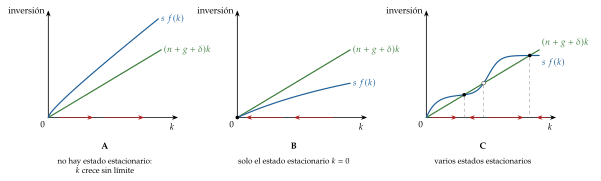
La heterogeneidad de los hogares importa para la imposición o la desigualdad, pero en un modelo de crecimiento se puede prescindir de ella.↩︎
Suponerla constante no es descabellado: la tasa de ahorro es bastante estable a largo plazo. El modelo de Ramsey, Cass y Koopmans la hace endógena (apartado III).↩︎
Con rendimientos constantes, el tamaño de cada empresa queda indeterminado (solo están determinados los agregados) [ver tema 3.A.11] [ver tema 3.A.16]: por eso se trabaja con una empresa representativa. El precio del bien se normaliza a 1 en todos los periodos, lo que es posible porque existe un activo que traslada consumo de un periodo a otro y su tipo de interés fija los precios intertemporales (Arrow, 1964) (Acemoglu, 2009, 31-32). Sin costes de ajuste, maximizar el beneficio en cada instante equivale a maximizar su valor actual [ver tema 3.A.34].↩︎
Es la definición del equilibrio en los modelos dinámicos modernos: no un punto, sino una senda completa de cantidades y precios, \(\{K_t,Y_t,C_t,w_t,r_t\}_{t\geq0}\), dados \(K_0\) y las sendas de \(L_t\) y \(A_t\), en la que el capital sigue la ecuación fundamental y los mercados de factores se vacían en cada momento (Acemoglu, 2009, cap. 2). El modelo de Solow es una mezcla: los hogares siguen una regla de ahorro, como en un modelo keynesiano, pero las empresas maximizan el beneficio y los mercados se vacían, como en un modelo de equilibrio general dinámico.↩︎
Phelps la desarrolló después en su libro Golden Rules of Economic Growth (Phelps, 1966).↩︎
Aquí \(h\) es el capital humano agregado por unidad de trabajo eficiente; en la teoría del capital humano, \(h\) es el de cada trabajador [ver tema 3.A.25]. No conviven en este tema.↩︎
\(\phi\) es aquí una función local de este apartado.↩︎
Cálculo propio con la Penn World Table 11.0 para 78 países no petroleros de al menos un millón de habitantes, con \(g+\delta=0{,}05\) como en MRW. El índice de capital humano de la tabla es un nivel (años de escolarización ponderados con los rendimientos de Mincer), no la tasa de inversión \(s_H\): la regresión es la segunda forma de la ecuación de MRW.↩︎
\(\alpha_R\), \(\alpha_T\) y \(b\) son letras locales de este párrafo; \(\beta\) sigue siendo la elasticidad del capital humano de MRW.↩︎
Frank Ramsey (1903-1930), filósofo y matemático de Cambridge y amigo de Keynes, murió con 26 años. En economía dejó 3 aportaciones: la regla de la imposición óptima de los bienes (Ramsey, 1927), que Boiteux (1956) aplicó a las tarifas de un monopolio público con restricción presupuestaria (precios de Ramsey-Boiteux) [ver tema 3.A.17]; su teoría del ahorro óptimo, y, con ella, el primer modelo de un agente que optimiza en un horizonte infinito. Su artículo de 1928 usaba el cálculo de variaciones y pasó casi inadvertido hasta que Cass y Koopmans lo recuperaron en 1965, cuando se comprobó que el modelo de crecimiento óptimo era, en lo esencial, el suyo.↩︎
Tjalling Koopmans recibió el Premio Nobel de Economía en 1975, con Leonid Kantoróvich, «por sus contribuciones a la teoría de la asignación óptima de recursos» (Nobel Prize Outreach, 1975, traducción propia).↩︎
Es parte de un programa más amplio de la macroeconomía del siglo XX: dar fundamentos microeconómicos a los agregados, siguiendo el esquema de Irving Fisher para los problemas intertemporales (preferencias, restricción presupuestaria e hipótesis de comportamiento). Así se hizo con el consumo (Friedman, Modigliani) [ver tema 3.A.33], la inversión (Jorgenson) [ver tema 3.A.34], la demanda de dinero (Baumol, Tobin) y la oferta de trabajo (Lucas y Rapping) [ver tema 3.A.25]. Los modelos de horizonte infinito se estudian en [ver tema 3.A.29].↩︎
Sin costes de ajuste, el problema de la empresa es estático: maximizar el beneficio en cada instante equivale a maximizar su valor actual. Con costes de ajuste o inversiones irreversibles, se vuelve intertemporal [ver tema 3.A.34].↩︎
Una economía admite un hogar representativo si las preferencias de cada hogar \(i\) tienen la forma polar de Gorman con la misma pendiente para todos, \(v_i(\vec{p},\overline W_i)=a_i(\vec{p})+b(\vec{p})\,\overline W_i\): la demanda agregada depende solo de la riqueza total y no de su reparto (Acemoglu, 2009, teorema 5.2) [ver tema 3.A.9].↩︎
Para no recargar la notación, las variables llevan el tiempo como subíndice, \(c_t\), y no entre paréntesis, \(c(t)\), como es habitual en tiempo continuo.↩︎
Por la regla de l’Hôpital, derivando respecto a \(\theta\): \(\lim_{\theta\to1}(x^{1-\theta}-1)/(1-\theta)=\lim_{\theta\to1}(-x^{1-\theta}\ln x)/(-1)=\ln x\). El \(-1\) del numerador es lo que hace del límite una indeterminación del tipo \(0/0\): sin él sería infinito. El \(-1\) no cambia la solución, porque solo suma una constante; el 3.B.31 lo omite.↩︎
El descuento exponencial es el único que da preferencias dinámicamente consistentes cuando solo importa la distancia al presente (Strotz, 1956). La economía del comportamiento ha documentado un descuento que cae deprisa a corto plazo y despacio a largo, hiperbólico, como el generalizado de Loewenstein y Prelec (1992), que lleva a decisiones inconsistentes en el tiempo; su versión más usada es la de Laibson [ver tema 3.A.1] [ver tema 3.A.29].↩︎
Un esquema de Ponzi paga a los inversores antiguos con el dinero de los nuevos, no con rendimientos genuinos.↩︎
\(\lambda_t\), con subíndice, es el coestado; \(\lambda\), sin subíndice, es la velocidad de convergencia (apartado I.2).↩︎
Que una subida del tipo de interés haga crecer más el consumo no implica que el consumo de hoy caiga. Hay 3 efectos (Obstfeld y Rogoff, 1996, cap. 1): de sustitución (el consumo futuro se abarata y se ahorra más), renta (si el hogar es acreedor, es más rico y consume más) y riqueza (las rentas futuras valen menos hoy y se consume menos). En tiempo discreto, la ecuación de Euler es \(u'(C_t)=\beta(1+r)\,u'(C_{t+1})\) [ver tema 3.A.33].↩︎
Con oferta de trabajo elástica, los impuestos sobre el consumo y sobre el trabajo sí distorsionan la elección entre consumo y ocio.↩︎
La función de Leontief es el caso límite de la de elasticidad de sustitución constante (CES) cuando la elasticidad de sustitución tiende a cero [ver tema 3.A.11].↩︎
\(a_L\) es una letra local de este anexo: el requerimiento unitario de trabajo, como el \(a_{Lj}\) del modelo ricardiano [ver tema 3.A.21].↩︎
Harrod no detalla cómo se comporta la economía en desequilibrio (cómo se forman las expectativas y cómo se corrigen los errores): solo señala que hay tendencias acumulativas, explosivas o implosivas.↩︎
Domar la llama \(\sigma\); aquí se escribe \(1/v\), porque \(\sigma\) es en el temario la elasticidad de sustitución.↩︎
El reparto de la renta era una de las diferencias entre las 2 Cambridge. La de Inglaterra rechazaba además la función de producción neoclásica y el propio concepto de stock de capital agregado: el capital está formado por máquinas distintas que, con trabajadores distintos, producen bienes distintos, y ese conjunto heterogéneo no se puede sumar en una sola magnitud (Robinson, 1953) [ver tema 3.A.4].↩︎
Sus autores escribían bajo el recuerdo de la Gran Depresión, lo que explica una visión tan sombría del sistema.↩︎
Con varias variables de estado y de control, hay una ecuación de coestado por cada variable de estado y una condición de primer orden por cada control.↩︎
La condición \(\lim_{t\to\infty}e^{-\rho t}\mathcal{H}_t=0\) que a veces se añade es la del problema en el que el momento final se elige libremente; aquí no hace falta.↩︎